if (!require("pacman")) install.packages("pacman")
pacman::p_load(
sf, # vector data operations
dplyr, # data wrangling
dataRetrieval, # download USGS NWIS data
lubridate, # Date object handling
modelsummary, # regression table generation
lfe, # fast regression with many fixed effects
tmap # mapping
)1 R as GIS: Demonstrations
Before you start
The primary objective of this chapter is to showcase the power of R as GIS through demonstrations via mock-up econometric research projects (first five demonstrations) and creating variables used in published articles (the last three demonstrations)1. Each demonstration project consists of a project overview (objective, datasets used, econometric model, and GIS tasks involved) and demonstration. This is really NOT a place you learn the nuts and bolts of how R does spatial operations. Indeed, we intentionally do not explain all the details of how the R codes work. We reiterate that the main purpose of the demonstrations is to get you a better idea of how R can be used to process spatial data to help your research projects involving spatial datasets. Finally, note that the mock-up projects use extremely simple econometric models that completely lacks careful thoughts you would need in real research projects. So, don’t waste your time judging the econometric models, and just focus on GIS tasks. If you are not familiar with html documents generated by rmarkdown, you might benefit from reading the conventions of the book in the Preface. Finally, for those who are interested in replicating the demonstrations, directions for replication are provided below. However, I would suggest focusing on the narratives for the first time around, learn the nuts and bolts of spatial operations from Chapters 2 through 5, and then come back to replicate them.
1 Note that this lecture does not deal with spatial econometrics at all. This lecture is about spatial data processing, not spatial econometrics.
Target Audience
The target audience of this chapter is those who are not very familiar with R as GIS. Knowledge of R certainly helps. But, I tried to write in a way that R beginners can still understand the power of R as GIS. Do not get bogged down by all the complex-looking R codes. Just focus on the narratives and figures to get a sense of what R can do.
Direction for replication
Datasets
Running the codes in this chapter involves reading datasets from a disk. All the datasets that will be imported are available here. In this chapter, the path to files is set relative to my own working directory (which is hidden). To run the codes without having to mess with paths to the files, follow these steps:
1.1 The impact of groundwater pumping on depth to water table
1.1.1 Project Overview
Objective:
- Understand the impact of groundwater pumping on groundwater level.
Datasets
- Groundwater pumping by irrigation wells in Chase, Dundy, and Perkins Counties in the southwest corner of Nebraska
- Groundwater levels observed at USGS monitoring wells located in the three counties and retrieved from the National Water Information System (NWIS) maintained by USGS using the
dataRetrievalpackage.
Econometric Model
In order to achieve the project objective, we will estimate the following model:
\[ y_{i,t} - y_{i,t-1} = \alpha + \beta gw_{i,t-1} + v \]
where \(y_{i,t}\) is the depth to groundwater table2 in March3 in year \(t\) at USGS monitoring well \(i\), and \(gw_{i,t-1}\) is the total amount of groundwater pumping that happened within the 2-mile radius of the monitoring well \(i\).
2 the distance from the surface to the top of the aquifer
3 For our geographic focus of southwest Nebraska, corn is the dominant crop type. Irrigation for corn happens typically between April through September. For example, this means that changes in groundwater level (\(y_{i,2012} - y_{i,2011}\)) captures the impact of groundwater pumping that occurred April through September in 2011.
GIS tasks
- read an ESRI shape file as an
sf(spatial) object- use
sf::st_read()
- use
- download depth to water table data using the
dataRetrievalpackage developed by USGS - create a buffer around USGS monitoring wells
- use
sf::st_buffer()
- use
- convert a regular
data.frame(non-spatial) with geographic coordinates into ansf(spatial) objects- use
sf::st_as_sf()andsf::st_set_crs()
- use
- reproject an
sfobject to another CRS - identify irrigation wells located inside the buffers and calculate total pumping
- use
sf::st_join()
- use
- create maps
- use the
tmappackage
- use the
Preparation for replication
Run the following code to install or load (if already installed) the pacman package, and then install or load (if already installed) the listed package inside the pacman::p_load() function.
1.1.2 Project Demonstration
The geographic focus of the project is the southwest corner of Nebraska consisting of Chase, Dundy, and Perkins County (see Figure 1.1 for their locations within Nebraska). Let’s read a shape file of the three counties represented as polygons. We will use it later to spatially filter groundwater level data downloaded from NWIS.
three_counties <-
sf::st_read(dsn = "Data", layer = "urnrd") %>%
#--- project to WGS84/UTM 14N ---#
sf::st_transform(32614)Reading layer `urnrd' from data source
`/Users/tmieno2/Dropbox/TeachingUNL/R-as-GIS-for-Scientists/chapters/Data'
using driver `ESRI Shapefile'
Simple feature collection with 3 features and 1 field
Geometry type: POLYGON
Dimension: XY
Bounding box: xmin: -102.0518 ymin: 40.00257 xmax: -101.248 ymax: 41.00395
Geodetic CRS: NAD83Code
#--- map the three counties ---#
tm_shape(NE_county) +
tm_polygons() +
tm_shape(three_counties) +
tm_polygons(col = "blue", alpha = 0.3) +
tm_layout(frame = FALSE)
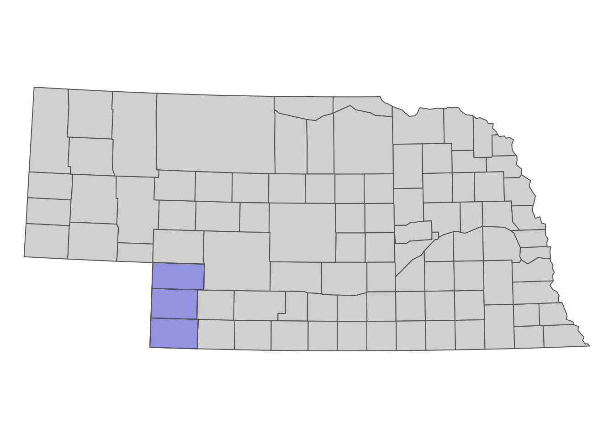
We have already collected groundwater pumping data, so let’s import it.
#--- groundwater pumping data ---#
(
urnrd_gw <- readRDS("Data/urnrd_gw_pumping.rds")
) well_id year vol_af lon lat
<num> <int> <num> <num> <num>
1: 1706 2007 182.566 245322.3 4542717
2: 2116 2007 46.328 245620.9 4541125
3: 2583 2007 38.380 245660.9 4542523
4: 2597 2007 70.133 244816.2 4541143
5: 3143 2007 135.870 243614.0 4541579
---
18668: 2006 2012 148.713 284782.5 4432317
18669: 2538 2012 115.567 284462.6 4432331
18670: 2834 2012 15.766 283338.0 4431341
18671: 2834 2012 381.622 283740.4 4431329
18672: 4983 2012 NA 284636.0 4432725well_id is the unique irrigation well identifier, and vol_af is the amount of groundwater pumped in acre-feet. This dataset is just a regular data.frame with coordinates. We need to convert this dataset into a object of class sf so that we can later identify irrigation wells located within a 2-mile radius of USGS monitoring wells (see Figure 1.2) for the spatial distribution of the irrigation wells.
urnrd_gw_sf <-
urnrd_gw %>%
#--- convert to sf ---#
sf::st_as_sf(coords = c("lon", "lat")) %>%
#--- set CRS WGS UTM 14 (you need to know the CRS of the coordinates to do this) ---#
sf::st_set_crs(32614)
#--- now sf ---#
urnrd_gw_sfSimple feature collection with 18672 features and 3 fields
Geometry type: POINT
Dimension: XY
Bounding box: xmin: 239959 ymin: 4431329 xmax: 310414.4 ymax: 4543146
Projected CRS: WGS 84 / UTM zone 14N
First 10 features:
well_id year vol_af geometry
1 1706 2007 182.566 POINT (245322.3 4542717)
2 2116 2007 46.328 POINT (245620.9 4541125)
3 2583 2007 38.380 POINT (245660.9 4542523)
4 2597 2007 70.133 POINT (244816.2 4541143)
5 3143 2007 135.870 POINT (243614 4541579)
6 5017 2007 196.799 POINT (243539.9 4543146)
7 1706 2008 171.250 POINT (245322.3 4542717)
8 2116 2008 171.650 POINT (245620.9 4541125)
9 2583 2008 46.100 POINT (245660.9 4542523)
10 2597 2008 124.830 POINT (244816.2 4541143)
Here are the rest of the steps we will take to create a regression-ready dataset for our analysis.
- download groundwater level data observed at USGS monitoring wells from National Water Information System (NWIS) using the
dataRetrievalpackage - identify the irrigation wells located within the 2-mile radius of the USGS wells and calculate the total groundwater pumping that occurred around each of the USGS wells by year
- merge the groundwater pumping data to the groundwater level data
Let’s download groundwater level data from NWIS first. The following code downloads groundwater level data for Nebraska from Jan 1, 1990, through Jan 1, 2016 (This would take a while if you try to run this yourself).
#--- download groundwater level data ---#
NE_gwl <-
lapply(
1990:2015,
\(year) {
dataRetrieval::readNWISdata(
stateCd = "Nebraska",
startDate = paste0(year, "-01-01"),
endDate = paste0(year + 1, "-01-01"),
service = "gwlevels"
)
}
) %>%
dplyr::bind_rows() %>%
dplyr::select(site_no, lev_dt, lev_va) %>%
dplyr::rename(date = lev_dt, dwt = lev_va)
#--- take a look ---#
head(NE_gwl, 10) site_no date dwt
1 400008097545301 2000-11-08 17.40
2 400008097545301 2008-10-09 13.99
3 400008097545301 2009-04-09 11.32
4 400008097545301 2009-10-06 15.54
5 400008097545301 2010-04-12 11.15
6 400008100050501 1990-03-15 24.80
7 400008100050501 1990-10-04 27.20
8 400008100050501 1991-03-08 24.20
9 400008100050501 1991-10-07 26.90
10 400008100050501 1992-03-02 24.70site_no is the unique monitoring well identifier, date is the date of groundwater level monitoring, and dwt is depth to water table.
We calculate the average groundwater level in March by USGS monitoring well (right before the irrigation season starts):
#--- Average depth to water table in March ---#
NE_gwl_march <-
NE_gwl %>%
dplyr::mutate(
date = as.Date(date),
month = lubridate::month(date),
year = lubridate::year(date),
) %>%
#--- select observation in March ---#
dplyr::filter(year >= 2007, month == 3) %>%
#--- gwl average in March ---#
dplyr::group_by(site_no, year) %>%
dplyr::summarize(dwt = mean(dwt))
#--- take a look ---#
head(NE_gwl_march, 10)# A tibble: 10 × 3
# Groups: site_no [2]
site_no year dwt
<chr> <dbl> <dbl>
1 400032101022901 2008 118.
2 400032101022901 2009 117.
3 400032101022901 2010 118.
4 400032101022901 2011 118.
5 400032101022901 2012 118.
6 400032101022901 2013 118.
7 400032101022901 2014 116.
8 400032101022901 2015 117.
9 400038099244601 2007 24.3
10 400038099244601 2008 21.7Since NE_gwl is missing geographic coordinates for the monitoring wells, we will download them using the readNWISsite() function and select only the monitoring wells that are inside the three counties.
#--- get the list of site ids ---#
NE_site_ls <- NE_gwl$site_no %>% unique()
#--- get the locations of the site ids ---#
sites_info <-
readNWISsite(siteNumbers = NE_site_ls) %>%
dplyr::select(site_no, dec_lat_va, dec_long_va) %>%
#--- turn the data into an sf object ---#
sf::st_as_sf(coords = c("dec_long_va", "dec_lat_va")) %>%
#--- NAD 83 ---#
sf::st_set_crs(4269) %>%
#--- project to WGS UTM 14 ---#
sf::st_transform(32614) %>%
#--- keep only those located inside the three counties ---#
.[three_counties, ]We now identify irrigation wells that are located within the 2-mile radius of the monitoring wells4. We first create polygons of 2-mile radius circles around the monitoring wells (see Figure 1.3).
4 This can alternatively be done using the sf::st_is_within_distance() function.
buffers <- sf::st_buffer(sites_info, dist = 2 * 1609.34) # in metertm_shape(three_counties) +
tm_polygons() +
tm_shape(buffers) +
tm_polygons(col = "red", alpha = 0, 2) +
tm_shape(sites_info) +
tm_symbols(size = 0.1) +
tm_layout(frame = FALSE)
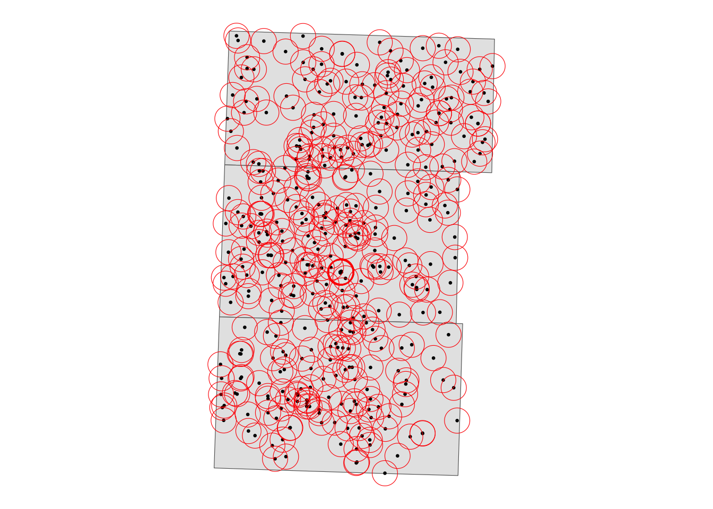
We now identify which irrigation wells are inside each of the buffers and get the associated groundwater pumping values. The sf::st_join() function from the sf package will do the trick.
#--- find irrigation wells inside the buffer and calculate total pumping ---#
pumping_nearby <- sf::st_join(buffers, urnrd_gw_sf)Let’s take a look at a USGS monitoring well (site_no = \(400012101323401\)).
filter(pumping_nearby, site_no == 400012101323401, year == 2010)Simple feature collection with 7 features and 4 fields
Geometry type: POLYGON
Dimension: XY
Bounding box: xmin: 279690.7 ymin: 4428006 xmax: 286128 ymax: 4434444
Projected CRS: WGS 84 / UTM zone 14N
site_no well_id year vol_af geometry
9.3 400012101323401 6331 2010 NA POLYGON ((286128 4431225, 2...
9.24 400012101323401 1883 2010 180.189 POLYGON ((286128 4431225, 2...
9.25 400012101323401 2006 2010 79.201 POLYGON ((286128 4431225, 2...
9.26 400012101323401 2538 2010 68.205 POLYGON ((286128 4431225, 2...
9.27 400012101323401 2834 2010 NA POLYGON ((286128 4431225, 2...
9.28 400012101323401 2834 2010 122.981 POLYGON ((286128 4431225, 2...
9.29 400012101323401 4983 2010 NA POLYGON ((286128 4431225, 2...As you can see, this well has seven irrigation wells within its 2-mile radius in 2010.
Now, we will get total nearby pumping by monitoring well and year.
(
total_pumping_nearby <-
pumping_nearby %>%
#--- calculate total pumping by monitoring well ---#
dplyr::group_by(site_no, year) %>%
dplyr::summarize(nearby_pumping = sum(vol_af, na.rm = TRUE)) %>%
#--- NA means 0 pumping ---#
dplyr::mutate(
nearby_pumping = ifelse(is.na(nearby_pumping), 0, nearby_pumping)
)
)Simple feature collection with 2396 features and 3 fields
Geometry type: POLYGON
Dimension: XY
Bounding box: xmin: 237904.5 ymin: 4428006 xmax: 313476.5 ymax: 4545687
Projected CRS: WGS 84 / UTM zone 14N
# A tibble: 2,396 × 4
# Groups: site_no [401]
site_no year nearby_pumping geometry
* <chr> <int> <dbl> <POLYGON [m]>
1 400012101323401 2007 571. ((286128 4431225, 286123.6 4431057, 286…
2 400012101323401 2008 772. ((286128 4431225, 286123.6 4431057, 286…
3 400012101323401 2009 500. ((286128 4431225, 286123.6 4431057, 286…
4 400012101323401 2010 451. ((286128 4431225, 286123.6 4431057, 286…
5 400012101323401 2011 545. ((286128 4431225, 286123.6 4431057, 286…
6 400012101323401 2012 1028. ((286128 4431225, 286123.6 4431057, 286…
7 400130101374401 2007 485. ((278847.4 4433844, 278843 4433675, 278…
8 400130101374401 2008 515. ((278847.4 4433844, 278843 4433675, 278…
9 400130101374401 2009 351. ((278847.4 4433844, 278843 4433675, 278…
10 400130101374401 2010 374. ((278847.4 4433844, 278843 4433675, 278…
# ℹ 2,386 more rowsWe now merge nearby pumping data to the groundwater level data, and transform the data to obtain the dataset ready for regression analysis.
#--- regression-ready data ---#
reg_data <-
NE_gwl_march %>%
#--- pick monitoring wells that are inside the three counties ---#
dplyr::filter(site_no %in% unique(sites_info$site_no)) %>%
#--- merge with the nearby pumping data ---#
dplyr::left_join(., total_pumping_nearby, by = c("site_no", "year")) %>%
#--- lead depth to water table ---#
dplyr::arrange(site_no, year) %>%
dplyr::group_by(site_no) %>%
dplyr::mutate(
#--- lead depth ---#
dwt_lead1 = dplyr::lead(dwt, n = 1, default = NA, order_by = year),
#--- first order difference in dwt ---#
dwt_dif = dwt_lead1 - dwt
)
#--- take a look ---#
dplyr::select(reg_data, site_no, year, dwt_dif, nearby_pumping)# A tibble: 2,022 × 4
# Groups: site_no [230]
site_no year dwt_dif nearby_pumping
<chr> <dbl> <dbl> <dbl>
1 400130101374401 2011 NA 358.
2 400134101483501 2007 2.87 2038.
3 400134101483501 2008 0.780 2320.
4 400134101483501 2009 -2.45 2096.
5 400134101483501 2010 3.97 2432.
6 400134101483501 2011 1.84 2634.
7 400134101483501 2012 -1.35 985.
8 400134101483501 2013 44.8 NA
9 400134101483501 2014 -26.7 NA
10 400134101483501 2015 NA NA
# ℹ 2,012 more rowsFinally, we estimate the model using fixest::feols() from the fixest package (see here for an introduction).
#--- OLS with site_no and year FEs (error clustered by site_no) ---#
reg_dwt <-
fixest::feols(
dwt_dif ~ nearby_pumping | site_no + year,
cluster = "site_no",
data = reg_data
)Here is the regression result.
modelsummary::msummary(
reg_dwt,
stars = TRUE,
gof_omit = "IC|Log|Adj|Within|Pseudo"
)| (1) | |
|---|---|
| + p | |
| nearby_pumping | 0.001*** |
| (0.000) | |
| Num.Obs. | 1342 |
| R2 | 0.409 |
| RMSE | 1.36 |
| Std.Errors | by: site_no |
| FE: site_no | X |
| FE: year | X |
1.2 Precision Agriculture
1.2.1 Project Overview
Objectives:
- Understand the impact of nitrogen on corn yield
- Understand how electric conductivity (EC) affects the marginal impact of nitrogen on corn
Datasets:
- The experimental design of an on-farm randomized nitrogen trail on an 80-acre field
- Data generated by the experiment
- As-applied nitrogen rate
- Yield measures
- Electric conductivity
Econometric Model:
Here is the econometric model, we would like to estimate:
\[ yield_i = \beta_0 + \beta_1 N_i + \beta_2 N_i^2 + \beta_3 N_i \cdot EC_i + \beta_4 N_i^2 \cdot EC_i + v_i \]
where \(yield_i\), \(N_i\), \(EC_i\), and \(v_i\) are corn yield, nitrogen rate, EC, and error term at subplot \(i\). Subplots which are obtained by dividing experimental plots into six of equal-area compartments.
GIS tasks
- read spatial data in various formats: R data set (rds), shape file, and GeoPackage file
- use
sf::st_read()
- use
- create maps using the
ggplot2package - create subplots within experimental plots
- user-defined function that makes use of
st_geometry()
- user-defined function that makes use of
- identify corn yield, as-applied nitrogen, and electric conductivity (EC) data points within each of the experimental plots and find their averages
- use
sf::st_join()andsf::aggregate()
- use
Preparation for replication
- Run the following code to install or load (if already installed) the
pacmanpackage, and then install or load (if already installed) the listed package inside thepacman::p_load()function.
if (!require("pacman")) install.packages("pacman")
pacman::p_load(
sf, # vector data operations
dplyr, # data wrangling
ggplot2, # for map creation
modelsummary, # regression table generation
patchwork # arrange multiple plots
)- Run the following code to define the theme for map:
theme_for_map <-
theme(
axis.ticks = element_blank(),
axis.text = element_blank(),
axis.line = element_blank(),
panel.border = element_blank(),
panel.grid = element_line(color = "transparent"),
panel.background = element_blank(),
plot.background = element_rect(fill = "transparent", color = "transparent")
)1.2.2 Project Demonstration
We have already run a whole-field randomized nitrogen experiment on a 80-acre field. Let’s import the trial design data
#--- read the trial design data ---#
trial_design_16 <- readRDS("Data/trial_design.rds")Figure 1.4 is the map of the trial design generated using ggplot2 package.
#--- map of trial design ---#
ggplot(data = trial_design_16) +
geom_sf(aes(fill = factor(NRATE))) +
scale_fill_brewer(name = "N", palette = "OrRd", direction = 1) +
theme_for_map
We have collected yield, as-applied NH3, and EC data. Let’s read in these datasets:5
5 Here we are demonstrating that R can read spatial data in different formats. R can read spatial data of many other formats. Here, we are reading a shapefile (.shp) and GeoPackage file (.gpkg).
Figure 1.5 shows the spatial distribution of the three variables. A map of each variable was made first, and then they are combined into one figure using the patchwork package6.
6 Here is its Github page. See the bottom of the page to find vignettes.
#--- yield map ---#
g_yield <-
ggplot() +
geom_sf(data = trial_design_16) +
geom_sf(data = yield, aes(color = yield), size = 0.5) +
scale_color_distiller(name = "Yield", palette = "OrRd", direction = 1) +
theme_for_map
#--- NH3 map ---#
g_NH3 <-
ggplot() +
geom_sf(data = trial_design_16) +
geom_sf(data = NH3_data, aes(color = aa_NH3), size = 0.5) +
scale_color_distiller(name = "NH3", palette = "OrRd", direction = 1) +
theme_for_map
#--- NH3 map ---#
g_ec <-
ggplot() +
geom_sf(data = trial_design_16) +
geom_sf(data = ec, aes(color = ec), size = 0.5) +
scale_color_distiller(name = "EC", palette = "OrRd", direction = 1) +
theme_for_map
#--- stack the figures vertically and display (enabled by the patchwork package) ---#
g_yield / g_NH3 / g_ec
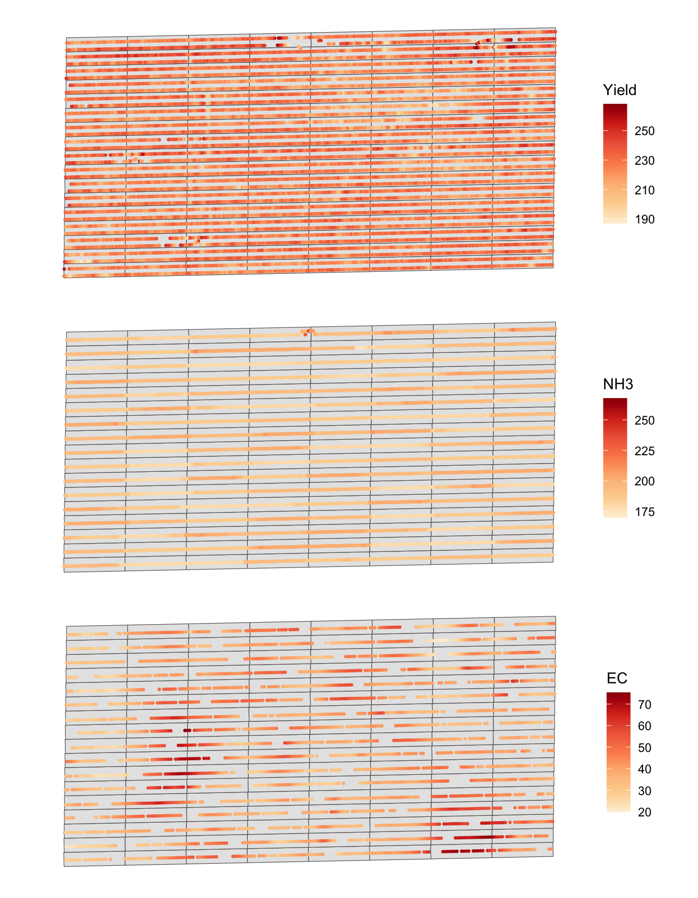
Instead of using plot as the observation unit, we would like to create subplots inside each of the plots and make them the unit of analysis because it would avoid masking the within-plot spatial heterogeneity of EC. Here, we divide each plot into six subplots.
The following function generate subplots by supplying a trial design and the number of subplots you would like to create within each plot:
gen_subplots <- function(plot, num_sub) {
#--- extract geometry information ---#
geom_mat <- sf::st_geometry(plot)[[1]][[1]]
#--- upper left ---#
top_start <- (geom_mat[2, ])
#--- upper right ---#
top_end <- (geom_mat[3, ])
#--- lower right ---#
bot_start <- (geom_mat[1, ])
#--- lower left ---#
bot_end <- (geom_mat[4, ])
top_step_vec <- (top_end - top_start) / num_sub
bot_step_vec <- (bot_end - bot_start) / num_sub
# create a list for the sub-grid
subplots_ls <- list()
for (j in 1:num_sub) {
rec_pt1 <- top_start + (j - 1) * top_step_vec
rec_pt2 <- top_start + j * top_step_vec
rec_pt3 <- bot_start + j * bot_step_vec
rec_pt4 <- bot_start + (j - 1) * bot_step_vec
rec_j <- rbind(rec_pt1, rec_pt2, rec_pt3, rec_pt4, rec_pt1)
temp_quater_sf <- list(st_polygon(list(rec_j))) %>%
sf::st_sfc(.) %>%
sf::st_sf(., crs = 26914)
subplots_ls[[j]] <- temp_quater_sf
}
return(do.call("rbind", subplots_ls))
}Let’s run the function to create six subplots within each of the experimental plots.
Figure 1.6 is a map of the subplots generated.
#--- here is what subplots look like ---#
ggplot(subplots) +
geom_sf() +
theme_for_map
We now identify the mean value of corn yield, nitrogen rate, and EC for each of the subplots using sf::aggregate() and sf::st_join().
(
reg_data <- subplots %>%
#--- yield ---#
sf::st_join(., aggregate(yield, ., mean), join = sf::st_equals) %>%
#--- nitrogen ---#
sf::st_join(., aggregate(NH3_data, ., mean), join = sf::st_equals) %>%
#--- EC ---#
sf::st_join(., aggregate(ec, ., mean), join = sf::st_equals)
)Simple feature collection with 816 features and 3 fields
Geometry type: POLYGON
Dimension: XY
Bounding box: xmin: 560121.3 ymin: 4533410 xmax: 560758.9 ymax: 4533734
Projected CRS: NAD83 / UTM zone 14N
First 10 features:
yield aa_NH3 ec geometry
1 220.1789 194.5155 28.33750 POLYGON ((560121.3 4533428,...
2 218.9671 194.4291 29.37667 POLYGON ((560134.5 4533428,...
3 220.3286 195.2903 30.73600 POLYGON ((560147.7 4533428,...
4 215.3121 196.7649 32.24000 POLYGON ((560160.9 4533429,...
5 216.9709 195.2199 36.27000 POLYGON ((560174.1 4533429,...
6 227.8761 184.6362 31.21000 POLYGON ((560187.3 4533429,...
7 226.0991 179.2143 31.99250 POLYGON ((560200.5 4533430,...
8 225.3973 179.0916 31.56500 POLYGON ((560213.7 4533430,...
9 221.1820 178.9585 33.01000 POLYGON ((560227 4533430, 5...
10 219.4659 179.0057 41.89750 POLYGON ((560240.2 4533430,...Here are the visualization of the subplot-level data (Figure 1.7):
g_sub_yield <-
ggplot() +
geom_sf(data = reg_data, aes(fill = yield), color = NA) +
scale_fill_distiller(name = "Yield", palette = "OrRd", direction = 1) +
theme_for_map
g_sub_NH3 <-
ggplot() +
geom_sf(data = reg_data, aes(fill = aa_NH3), color = NA) +
scale_fill_distiller(name = "NH3", palette = "OrRd", direction = 1) +
theme_for_map
g_sub_ec <-
ggplot() +
geom_sf(data = reg_data, aes(fill = ec), color = NA) +
scale_fill_distiller(name = "EC", palette = "OrRd", direction = 1) +
theme_for_map
g_sub_yield / g_sub_NH3 / g_sub_ec
Let’s estimate the model and see the results:
ols_res <- lm(yield ~ aa_NH3 + I(aa_NH3^2) + I(aa_NH3 * ec) + I(aa_NH3^2 * ec), data = reg_data)
modelsummary::msummary(
ols_res,
stars = TRUE,
gof_omit = "IC|Log|Adj|Within|Pseudo"
)| (1) | |
|---|---|
| + p | |
| (Intercept) | 327.993** |
| (125.638) | |
| aa_NH3 | -1.223 |
| (1.308) | |
| I(aa_NH3^2) | 0.004 |
| (0.003) | |
| I(aa_NH3 * ec) | 0.002 |
| (0.003) | |
| I(aa_NH3^2 * ec) | 0.000 |
| (0.000) | |
| Num.Obs. | 784 |
| R2 | 0.010 |
| F | 2.023 |
| RMSE | 5.69 |
1.3 Land Use and Weather
1.3.1 Project Overview
Objective
- Understand the impact of past precipitation on crop choice in Iowa (IA).
Datasets
- IA county boundary
- Regular grids over IA, created using
sf::st_make_grid() - PRISM daily precipitation data downloaded using
prismpackage - Land use data from the Cropland Data Layer (CDL) for IA in 2015, downloaded using
CropScapeRpackage
Econometric Model
The econometric model we would like to estimate is:
\[ CS_i = \alpha + \beta_1 PrN_{i} + \beta_2 PrC_{i} + v_i \]
where \(CS_i\) is the area share of corn divided by that of soy in 2015 for grid \(i\) (we will generate regularly-sized grids in the Demo section), \(PrN_i\) is the total precipitation observed in April through May and September in 2014, \(PrC_i\) is the total precipitation observed in June through August in 2014, and \(v_i\) is the error term. To run the econometric model, we need to find crop share and weather variables observed at the grids. We first tackle the crop share variable, and then the precipitation variable.
GIS tasks
- download Cropland Data Layer (CDL) data by USDA NASS
- download PRISM weather data
- crop PRISM data to the geographic extent of IA
- use
terra::crop()
- use
- read PRISM data
- use
terra::rast()
- use
- extract the CRS of PRISM data
- use
terra::crs()
- use
- create regular grids within IA, which become the observation units of the econometric analysis
- remove grids that share small area with IA
- use
sf::st_intersection()andsf::st_area
- use
- assign crop share and weather data to each of the generated IA grids (parallelized)
- create maps
- use the
tmappackage
- use the
Preparation for replication
- Run the following code to install or load (if already installed) the
pacmanpackage, and then install or load (if already installed) the listed package inside thepacman::p_load()function.
if (!require("pacman")) install.packages("pacman")
pacman::p_load(
sf, # vector data operations
terra, # raster data operations
exactextractr, # fast raster data extraction for polygons
maps, # to get county boundary data
data.table, # data wrangling
dplyr, # data wrangling
lubridate, # Date object handling
tmap, # for map creation
modelsummary, # regression table generation
future.apply, # parallel computation
CropScapeR, # download CDL data
prism, # download PRISM data
stringr # string manipulation
)1.3.2 Project Demonstration
The geographic focus of this project is Iowas. Let’s get Iowa state border (see Figure 1.8 for its map).
Code
#--- map IA state border ---#
tm_shape(IA_boundary) +
tm_polygons() +
tm_layout(frame = FALSE)
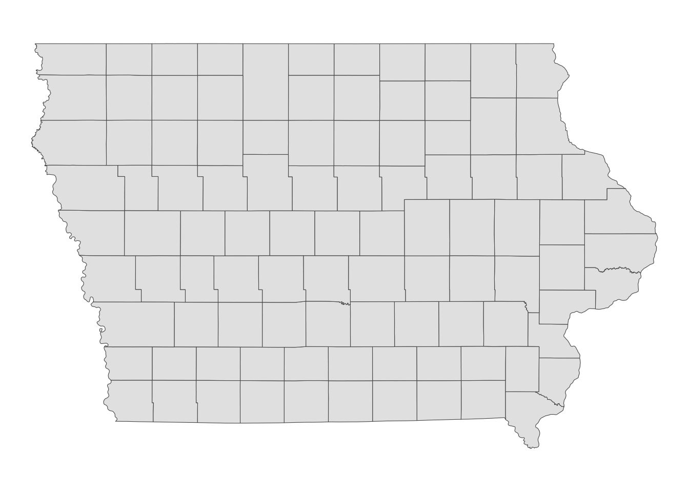
7 We by no means are saying that this is the right geographical unit of analysis. This is just about demonstrating how R can be used for analysis done at the higher spatial resolution than county.
The unit of analysis is artificial grids that we create over Iowa. The grids are regularly-sized rectangles except around the edge of the Iowa state border7. So, let’s create grids and remove those that do not overlap much with Iowa (Figure 1.9 shows what the generated grids look like).
#--- create regular grids (40 cells by 40 columns) over IA ---#
IA_grids <-
IA_boundary %>%
#--- create grids ---#
sf::st_make_grid(, n = c(40, 40)) %>%
#--- convert to sf ---#
sf::st_as_sf() %>%
#--- assign grid id for future merge ---#
dplyr::mutate(grid_id = 1:nrow(.)) %>%
#--- make some of the invalid polygons valid ---#
sf::st_make_valid() %>%
#--- drop grids that do not overlap with Iowa ---#
.[IA_boundary, ]Code
#--- plot the grids over the IA state border ---#
tm_shape(IA_boundary) +
tm_borders(col = "red", lwd = 2) +
tm_shape(IA_grids) +
tm_borders(col = "blue") +
tm_layout(frame = FALSE)
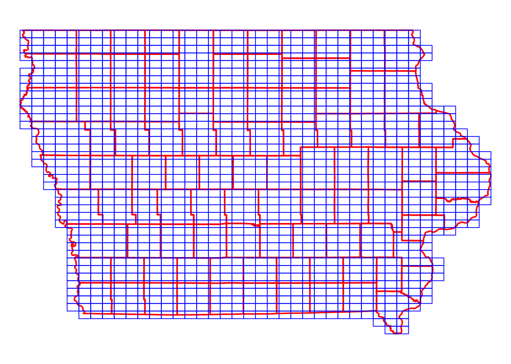
Let’s work on crop share data. You can download CDL data using the CropScapeR::GetCDLData() function.
#--- download the CDL data for IA in 2015 ---#
(
cdl_IA_2015 <- CropScapeR::GetCDLData(aoi = 19, year = 2015, type = "f")
)The cells (30 meter by 30 meter) of the imported raster layer take a value ranging from 0 to 255. Corn and soybean are represented by 1 and 5, respectively.
Figure 1.10 shows the map of one of the IA grids and the CDL cells it overlaps with.
Code
temp_grid <- IA_grids[100, ]
extent_grid <-
temp_grid %>%
sf::st_transform(., terra::crs(IA_cdl_2015)) %>%
sf::st_bbox()
raster_ovelap <- terra::crop(IA_cdl_2015, extent_grid)
ggplot() +
tidyterra::geom_spatraster(data = raster_ovelap, aes(fill = Layer_1)) +
geom_sf(data = temp_grid, fill = NA, color = "red", linewidth = 1) +
scale_fill_viridis_c() +
theme_void()
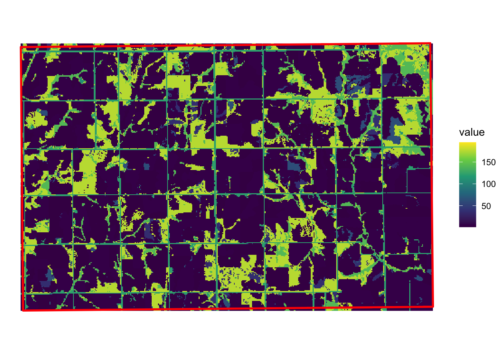
We would like to extract all the cell values within the red border.
We use exactextractr::exact_extract() to identify which cells of the CDL raster layer fall within each of the IA grids and extract land use type values. We then find the share of corn and soybean for each of the grids.
#--- reproject grids to the CRS of the CDL data ---#
IA_grids_rp_cdl <- sf::st_transform(IA_grids, terra::crs(IA_cdl_2015))
#--- extract crop type values and find frequencies ---#
cdl_extracted <-
exactextractr::exact_extract(IA_cdl_2015, IA_grids_rp_cdl) %>%
lapply(., function(x) data.table(x)[, .N, by = value]) %>%
#--- combine the list of data.tables into one data.table ---#
data.table::rbindlist(idcol = TRUE) %>%
#--- find the share of each land use type ---#
.[, share := N / sum(N), by = .id] %>%
.[, N := NULL] %>%
#--- keep only the share of corn and soy ---#
.[value %in% c(1, 5), ]We then find the corn to soy ratio for each of the IA grids.
#--- find corn/soy ratio ---#
corn_soy <-
cdl_extracted %>%
#--- long to wide ---#
data.table::dcast(.id ~ value, value.var = "share") %>%
#--- change variable names ---#
data.table::setnames(c(".id", "1", "5"), c("grid_id", "corn_share", "soy_share")) %>%
#--- corn share divided by soy share ---#
.[, c_s_ratio := corn_share / soy_share]We are still missing daily precipitation data at the moment. We have decided to use daily weather data from PRISM. Daily PRISM data is a raster data with the cell size of 4 km by 4 km. Figure 1.11 presents precipitation data downloaded for April 1, 2010. It covers the entire contiguous U.S.
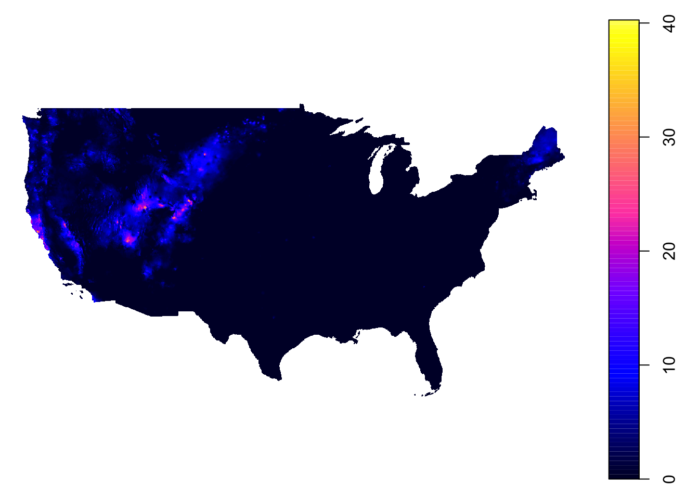
Let’s now download PRISM data (You do not have to run this code to get the data. It is included in the data folder for replication here). This can be done using the get_prism_dailys() function from the prism package.8
options(prism.path = "Data/PRISM")
prism::get_prism_dailys(
type = "ppt",
minDate = "2014-04-01",
maxDate = "2014-09-30",
keepZip = FALSE
)When we use get_prism_dailys() to download data9, it creates one folder for each day. So, I have about 180 folders inside the folder I designated as the download destination above with the options() function.
9 For this project, monthly PRISM data could have been used, which can be downloaded using the prism::get_prism_monthlys() function. But, in many applications, daily data is necessary, so how to download and process them is illustrated here.
We now try to extract precipitation value by day for each of the IA grids by geographically overlaying IA grids onto the PRISM data layer and identify which PRISM cells each of the IA grid encompass. 10.
10 Be cautious about using sf::st_buffer() for spatial objects in geographic coordinates (latitude, longitude) in practice. Significant distortion will be introduced to the buffer due to the fact that one degree in latitude and longitude means different distances at the latitude of IA. Here, I am just creating a buffer to extract PRISM cells to display on the map.
#--- read a PRISM dataset ---#
prism_whole <- terra::rast("Data/PRISM/PRISM_ppt_stable_4kmD2_20140401_bil/PRISM_ppt_stable_4kmD2_20140401_bil.bil")
#--- align the CRS ---#
IA_grids_rp_prism <- sf::st_transform(IA_grids, terra::crs(prism_whole))
#--- crop the PRISM data for the 1st IA grid ---#
sf_use_s2(FALSE)
PRISM_1 <- terra::crop(prism_whole, sf::st_buffer(IA_grids_rp_prism[1, ], dist = 0.05))Figure 1.12 shows how the first IA grid (in red) overlaps with the PRISM cells. As you can see, some PRISM grids are fully inside the analysis grid, while others are partially inside it. So, when assigning precipitation values to grids, we will use the coverage-weighted mean of precipitations.
#--- map them ---#
ggplot() +
tidyterra::geom_spatraster(data = PRISM_1) +
scale_fill_viridis_c(name = "Precipitation") +
geom_sf(data = IA_grids_rp_prism[1, ], fill = NA, color = "red") +
theme_void()
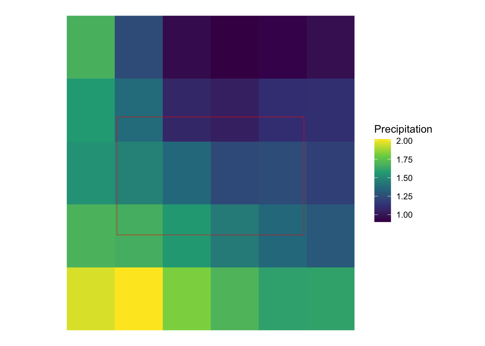
Unlike the CDL layer, we have 183 raster layers to process. Fortunately, we can process many raster files at the same time very quickly by first “stacking” many raster files first and then applying the exactextractr::exact_extract() function. Using future.apply::future_lapply(), we let \(6\) cores take care of this task with each processing 31 files, except one of them handling only 28 files.11
11 Parallelization of extracting values from many raster layers for polygons are discussed in much more detail in Chapter 9.
We first get all the paths to the PRISM files.
#--- get all the dates ---#
dates_ls <- seq(as.Date("2014-04-01"), as.Date("2014-09-30"), "days")
#--- remove hyphen ---#
dates_ls_no_hyphen <- stringr::str_remove_all(dates_ls, "-")
#--- get all the prism file names ---#
folder_name <- paste0("PRISM_ppt_stable_4kmD2_", dates_ls_no_hyphen, "_bil")
file_name <- paste0("PRISM_ppt_stable_4kmD2_", dates_ls_no_hyphen, "_bil.bil")
file_paths <- paste0("Data/PRISM/", folder_name, "/", file_name)
#--- take a look ---#
head(file_paths)[1] "Data/PRISM/PRISM_ppt_stable_4kmD2_20140401_bil/PRISM_ppt_stable_4kmD2_20140401_bil.bil"
[2] "Data/PRISM/PRISM_ppt_stable_4kmD2_20140402_bil/PRISM_ppt_stable_4kmD2_20140402_bil.bil"
[3] "Data/PRISM/PRISM_ppt_stable_4kmD2_20140403_bil/PRISM_ppt_stable_4kmD2_20140403_bil.bil"
[4] "Data/PRISM/PRISM_ppt_stable_4kmD2_20140404_bil/PRISM_ppt_stable_4kmD2_20140404_bil.bil"
[5] "Data/PRISM/PRISM_ppt_stable_4kmD2_20140405_bil/PRISM_ppt_stable_4kmD2_20140405_bil.bil"
[6] "Data/PRISM/PRISM_ppt_stable_4kmD2_20140406_bil/PRISM_ppt_stable_4kmD2_20140406_bil.bil"We now prepare for parallelized extractions and then implement them using future_apply() (you can have a look at Appendix A to familiarize yourself with parallel computation using the future.apply package).
#--- define the number of cores to use ---#
num_core <- 6
#--- prepare some parameters for parallelization ---#
file_len <- length(file_paths)
files_per_core <- ceiling(file_len / num_core)
#--- prepare for parallel processing ---#
future::plan(multicore, workers = num_core)
#--- reproject IA grids to the CRS of PRISM data ---#
IA_grids_reprojected <- sf::st_transform(IA_grids, terra::crs(prism_whole))Here is the function that we run in parallel over 6 cores.
#--- define the function to extract PRISM values by block of files ---#
extract_by_block <- function(i, files_per_core) {
#--- files processed by core ---#
start_file_index <- (i - 1) * files_per_core + 1
#--- indexes for files to process ---#
file_index <- seq(
from = start_file_index,
to = min((start_file_index + files_per_core), file_len),
by = 1
)
#--- extract values ---#
data_temp <-
file_paths[file_index] %>% # get file names
#--- read as a multi-layer raster ---#
terra::rast() %>%
#--- extract ---#
exactextractr::exact_extract(., IA_grids_reprojected) %>%
#--- combine into one data set ---#
data.table::rbindlist(idcol = "ID") %>%
#--- wide to long ---#
data.table::melt(id.var = c("ID", "coverage_fraction")) %>%
#--- calculate "area"-weighted mean ---#
.[, .(value = sum(value * coverage_fraction) / sum(coverage_fraction)), by = .(ID, variable)]
return(data_temp)
}Now, let’s run the function in parallel and calculate precipitation by period.
#--- run the function ---#
precip_by_period <-
future.apply::future_lapply(
1:num_core,
function(x) extract_by_block(x, files_per_core)
) %>%
data.table::rbindlist() %>%
#--- recover the date ---#
.[, variable := as.Date(str_extract(variable, "[0-9]{8}"), "%Y%m%d")] %>%
#--- change the variable name to date ---#
data.table::setnames("variable", "date") %>%
#--- define critical period ---#
.[, critical := "non_critical"] %>%
.[month(date) %in% 6:8, critical := "critical"] %>%
#--- total precipitation by critical dummy ---#
.[, .(precip = sum(value)), by = .(ID, critical)] %>%
#--- wide to long ---#
data.table::dcast(ID ~ critical, value.var = "precip")We now have grid-level crop share and precipitation data.
Let’s merge them and run regression.12
12 We can match on grid_id from corn_soy and ID from “precip_by_period” because grid_id is identical with the row number and ID variables were created so that the ID value of \(i\) corresponds to \(i\) th row of IA_grids.
Here is the regression results table.
#--- regression table ---#
modelsummary::msummary(
reg_results,
stars = TRUE,
gof_omit = "IC|Log|Adj|Within|Pseudo"
)| (1) | |
|---|---|
| + p | |
| (Intercept) | 2.701*** |
| (0.161) | |
| critical | -0.002*** |
| (0.000) | |
| non_critical | 0.000 |
| (0.000) | |
| Num.Obs. | 1218 |
| R2 | 0.058 |
| F | 37.230 |
| RMSE | 0.74 |
Again, do not read into the results as the econometric model is terrible.
1.4 The Impact of Railroad Presence on Corn Planted Acreage
1.4.1 Project Overview
Objective
- Understand the impact of railroad on corn planted acreage in Illinois
Datasets
- USDA corn planted acreage for Illinois downloaded from the USDA NationalAgricultural Statistics Service (NASS) QuickStats service using
tidyUSDApackage - US railroads (line data) downloaded from here
Econometric Model
We will estimate the following model:
\[ y_i = \beta_0 + \beta_1 RL_i + v_i \]
where \(y_i\) is corn planted acreage in county \(i\) in Illinois, \(RL_i\) is the total length of railroad, and \(v_i\) is the error term.
GIS tasks
- Download USDA corn planted acreage by county as a spatial dataset (
sfobject)- use
tidyUSDA::getQuickStat()
- use
- Import US railroad shape file as a spatial dataset (
sfobject)- use
sf:st_read()
- use
- Spatially subset (crop) the railroad data to the geographic boundary of Illinois
- use
sf_1[sf_2, ]
- use
- Find railroads for each county (cross-county railroad will be chopped into pieces for them to fit within a single county)
- Calculate the travel distance of each railroad piece
- use
sf::st_length()
- use
- create maps using the
ggplot2package
Preparation for replication
- Run the following code to install or load (if already installed) the
pacmanpackage, and then install or load (if already installed) the listed package inside thepacman::p_load()function.
if (!require("pacman")) install.packages("pacman")
pacman::p_load(
tidyUSDA, # access USDA NASS data
sf, # vector data operations
dplyr, # data wrangling
ggplot2, # for map creation
modelsummary, # regression table generation
keyring # API management
)- Run the following code to define the theme for map:
theme_for_map <-
theme(
axis.ticks = element_blank(),
axis.text = element_blank(),
axis.line = element_blank(),
panel.border = element_blank(),
panel.grid.major = element_line(color = "transparent"),
panel.grid.minor = element_line(color = "transparent"),
panel.background = element_blank(),
plot.background = element_rect(fill = "transparent", color = "transparent")
)1.4.2 Project Demonstration
We first download corn planted acreage data for 2018 from USDA NASS QuickStat service using tidyUSDA package13.
13 In order to actually download the data, you need to obtain the API key here. Once the API key was obtained, it was stored using keyring::set_key(), which was named “usda_nass_qs_api”. In the code to the left, the API key was retrieved using keyring::key_get("usda_nass_qs_api") in the code. For your replication, replace key_get("usda_nass_qs_api") with your own API key.
(
IL_corn_planted <-
getQuickstat(
#--- use your own API key here fore replication ---#
key = keyring::key_get("usda_nass_qs_api"),
program = "SURVEY",
data_item = "CORN - ACRES PLANTED",
geographic_level = "COUNTY",
state = "ILLINOIS",
year = "2018",
geometry = TRUE
) %>%
#--- keep only some of the variables ---#
dplyr::select(year, NAME, county_code, short_desc, Value)
)Simple feature collection with 90 features and 5 fields (with 6 geometries empty)
Geometry type: MULTIPOLYGON
Dimension: XY
Bounding box: xmin: -91.51308 ymin: 36.9703 xmax: -87.4952 ymax: 42.50848
Geodetic CRS: NAD83
First 10 features:
year NAME county_code short_desc Value
1 2018 Bureau 011 CORN - ACRES PLANTED 264000
2 2018 Carroll 015 CORN - ACRES PLANTED 134000
3 2018 Henry 073 CORN - ACRES PLANTED 226500
4 2018 Jo Daviess 085 CORN - ACRES PLANTED 98500
5 2018 Lee 103 CORN - ACRES PLANTED 236500
6 2018 Mercer 131 CORN - ACRES PLANTED 141000
7 2018 Ogle 141 CORN - ACRES PLANTED 217000
8 2018 Putnam 155 CORN - ACRES PLANTED 32300
9 2018 Rock Island 161 CORN - ACRES PLANTED 68400
10 2018 Stephenson 177 CORN - ACRES PLANTED 166500
geometry
1 MULTIPOLYGON (((-89.16654 4...
2 MULTIPOLYGON (((-89.97844 4...
3 MULTIPOLYGON (((-89.85722 4...
4 MULTIPOLYGON (((-90.21448 4...
5 MULTIPOLYGON (((-89.05201 4...
6 MULTIPOLYGON (((-91.11419 4...
7 MULTIPOLYGON (((-88.94215 4...
8 MULTIPOLYGON (((-89.46647 4...
9 MULTIPOLYGON (((-90.33554 4...
10 MULTIPOLYGON (((-89.62982 4...A nice thing about this function is that the data is downloaded as an sf object with county geometry with geometry = TRUE. So, you can immediately plot it (Figure 1.13) and use it for later spatial interactions without having to merge the downloaded data to an independent county boundary data.
ggplot(IL_corn_planted) +
geom_sf(aes(fill = Value / 1000)) +
scale_fill_distiller(name = "Planted Acreage (1000 acres)", palette = "YlOrRd", trans = "reverse") +
theme(legend.position = "bottom") +
theme_for_map
Let’s import the U.S. railroad data and reproject to the CRS of IL_corn_planted:
rail_roads <-
sf::st_read("Data/tl_2015_us_rails.shp") %>%
#--- reproject to the CRS of IL_corn_planted ---#
sf::st_transform(st_crs(IL_corn_planted))Reading layer `tl_2015_us_rails' from data source
`/Users/tmieno2/Dropbox/TeachingUNL/R-as-GIS-for-Scientists/chapters/Data/tl_2015_us_rails.shp'
using driver `ESRI Shapefile'
Simple feature collection with 180958 features and 3 fields
Geometry type: MULTILINESTRING
Dimension: XY
Bounding box: xmin: -165.4011 ymin: 17.95174 xmax: -65.74931 ymax: 65.00006
Geodetic CRS: NAD83Figure 1.14 shows is what it looks like:
ggplot(rail_roads) +
geom_sf() +
theme_for_map
We now crop it to the Illinois state border (Figure 1.15):
rail_roads_IL <- rail_roads[IL_corn_planted, ]ggplot() +
geom_sf(data = rail_roads_IL) +
theme_for_map
Let’s now find railroads for each county, where cross-county railroads will be chopped into pieces so each piece fits completely within a single county, using st_intersection().
rails_IL_segmented <- st_intersection(rail_roads_IL, IL_corn_planted)Here are the railroads for Richland County:
ggplot() +
geom_sf(data = dplyr::filter(IL_corn_planted, NAME == "Richland")) +
geom_sf(
data = dplyr::filter(rails_IL_segmented, NAME == "Richland"),
aes(color = LINEARID)
) +
theme(legend.position = "bottom") +
theme_for_map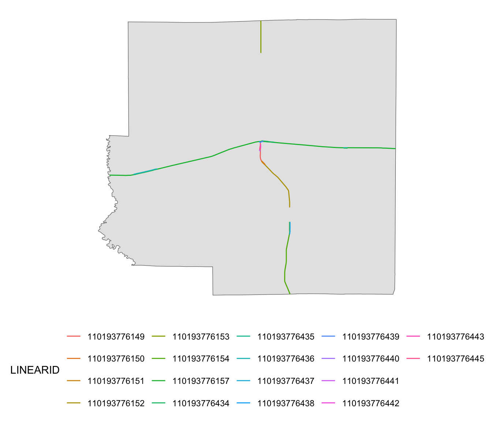
We now calculate the travel distance (Great-circle distance) of each railroad piece using st_length() and then sum them up by county to find total railroad length by county.
(
rail_length_county <-
mutate(
rails_IL_segmented,
length_in_m = as.numeric(st_length(rails_IL_segmented))
) %>%
#--- geometry no longer needed ---#
st_drop_geometry() %>%
#--- group by county ID ---#
group_by(county_code) %>%
#--- sum rail length by county ---#
summarize(length_in_m = sum(length_in_m))
)# A tibble: 82 × 2
county_code length_in_m
<chr> <dbl>
1 001 77221.
2 003 77293.
3 007 36757.
4 011 255425.
5 015 161620.
6 017 30585.
7 019 389226.
8 021 155749.
9 023 78592.
10 025 92030.
# ℹ 72 more rowsWe merge the railroad length data to the corn planted acreage data and estimate the model.
reg_data <- left_join(IL_corn_planted, rail_length_county, by = "county_code")lm(Value ~ length_in_m, data = reg_data) %>%
modelsummary(
stars = TRUE,
gof_omit = "IC|Log|Adj|Within|Pseudo"
)| (1) | |
|---|---|
| + p | |
| (Intercept) | 108153.372*** |
| (11419.166) | |
| length_in_m | 0.092+ |
| (0.047) | |
| Num.Obs. | 82 |
| R2 | 0.046 |
| F | 3.866 |
| RMSE | 68193.40 |
1.5 Groundwater use for agricultural irrigation
1.5.1 Project Overview
Objective
- Understand the impact of monthly precipitation on groundwater use for agricultural irrigation
Datasets
- Annual groundwater pumping by irrigation wells in Kansas for 2010 and 2011 (originally obtained from the Water Information Management & Analysis System (WIMAS) database)
- Daymet daily precipitation and maximum temperature downloaded using
daymetrpackage
Econometric Model
The econometric model we would like to estimate is:
\[ y_{i,t} = \alpha + P_{i,t} \beta + T_{i,t} \gamma + \phi_i + \eta_t + v_{i,t} \]
where \(y\) is the total groundwater extracted in year \(t\), \(P_{i,t}\) and \(T_{i,t}\) is the collection of monthly total precipitation and mean maximum temperature April through September in year \(t\), respectively, \(\phi_i\) is the well fixed effect, \(\eta_t\) is the year fixed effect, and \(v_{i,t}\) is the error term.
GIS tasks
- download Daymet precipitation and maximum temperature data for each well from within R in parallel
Preparation for replication
- Run the following code to install or load (if already installed) the
pacmanpackage, and then install or load (if already installed) the listed package inside thepacman::p_load()function.
if (!require("pacman")) install.packages("pacman")
pacman::p_load(
daymetr, # get Daymet data
sf, # vector data operations
dplyr, # data wrangling
data.table, # data wrangling
ggplot2, # for map creation
RhpcBLASctl, # to get the number of available cores
future.apply, # parallelization
lfe, # fast regression with many fixed effects
modelsummary # regression table generation
)1.5.2 Project Demonstration
We have already collected annual groundwater pumping data by irrigation wells in 2010 and 2011 in Kansas from the Water Information Management & Analysis System (WIMAS) database. Let’s read in the groundwater use data.
#--- read in the data ---#
(
gw_KS_sf <- readRDS("Data/gw_KS_sf.rds")
)Simple feature collection with 56225 features and 3 fields
Geometry type: POINT
Dimension: XY
Bounding box: xmin: -102.0495 ymin: 36.99561 xmax: -94.70746 ymax: 40.00191
Geodetic CRS: NAD83
First 10 features:
well_id year af_used geometry
1 1 2010 67.00000 POINT (-100.4423 37.52046)
2 1 2011 171.00000 POINT (-100.4423 37.52046)
3 3 2010 30.93438 POINT (-100.7118 39.91526)
4 3 2011 12.00000 POINT (-100.7118 39.91526)
5 7 2010 0.00000 POINT (-101.8995 38.78077)
6 7 2011 0.00000 POINT (-101.8995 38.78077)
7 11 2010 154.00000 POINT (-101.7114 39.55035)
8 11 2011 160.00000 POINT (-101.7114 39.55035)
9 12 2010 28.17239 POINT (-95.97031 39.16121)
10 12 2011 89.53479 POINT (-95.97031 39.16121)We have 28553 wells in total, and each well has records of groundwater pumping (af_used) for years 2010 and 2011.
KS_counties <- tigris::counties(state = "Kansas", cb= TRUE, progress_bar = FALSE)Figure 1.16 shows the spatial distribution of the wells.
ggplot() +
geom_sf(data = KS_counties) +
geom_sf(data = gw_KS_sf, size = 0.1) +
theme_void()
We now need to get monthly precipitation and maximum temperature data. We have decided that we use Daymet weather data. Here we use the download_daymet() function from the daymetr package14 that allows us to download all the weather variables for a specified geographic location and time period15. We write a wrapper function that downloads Daymet data and then processes it to find monthly total precipitation and mean maximum temperature16. We then loop over the 56225 wells, which is parallelized using the future.apply::future_apply() function17. This process takes about half an hour on my Mac with parallelization on 18 cores. The data is available in the data repository for this course (named as “all_daymet.rds”).
15 See Section 8.4 for a fuller explanation of how to use the daymetr package.
16 This may not be ideal for a real research project because the original raw data is not kept. It is often the case that your econometric plan changes on the course of your project (e.g., using other weather variables or using different temporal aggregation of weather variables instead of monthly aggregation). When this happens, you need to download the same data all over again.
17 For parallelized computation, see Appendix A
#--- get the geographic coordinates of the wells ---#
well_locations <-
gw_KS_sf %>%
unique(by = "well_id") %>%
dplyr::select(well_id) %>%
cbind(., st_coordinates(.))
#--- define a function that downloads Daymet data by well and process it ---#
get_daymet <- function(i) {
temp_site <- well_locations[i, ]$well_id
temp_long <- well_locations[i, ]$X
temp_lat <- well_locations[i, ]$Y
data_temp <-
daymetr::download_daymet(
site = temp_site,
lat = temp_lat,
lon = temp_long,
start = 2010,
end = 2011,
#--- if TRUE, tidy data is returned ---#
simplify = TRUE,
#--- if TRUE, the downloaded data can be assigned to an R object ---#
internal = TRUE
) %>%
data.table() %>%
#--- keep only precip and tmax ---#
.[measurement %in% c("prcp..mm.day.", "tmax..deg.c."), ] %>%
#--- recover calender date from Julian day ---#
.[, date := as.Date(paste(year, yday, sep = "-"), "%Y-%j")] %>%
#--- get month ---#
.[, month := month(date)] %>%
#--- keep only April through September ---#
.[month %in% 4:9, ] %>%
.[, .(site, year, month, date, measurement, value)] %>%
#--- long to wide ---#
data.table::dcast(site + year + month + date ~ measurement, value.var = "value") %>%
#--- change variable names ---#
data.table::setnames(c("prcp..mm.day.", "tmax..deg.c."), c("prcp", "tmax")) %>%
#--- find the total precip and mean tmax by month-year ---#
.[, .(prcp = sum(prcp), tmax = mean(tmax)), by = .(month, year)] %>%
.[, well_id := temp_site]
return(data_temp)
gc()
}Here is what one run (for the first well) of get_daymet() returns
#--- one run ---#
(
returned_data <- get_daymet(1)[]
) month year prcp tmax well_id
<num> <int> <num> <num> <num>
1: 4 2010 40.72 20.71700 1
2: 5 2010 93.60 24.41677 1
3: 6 2010 70.45 32.59933 1
4: 7 2010 84.58 33.59903 1
5: 8 2010 66.41 34.17323 1
6: 9 2010 15.58 31.25800 1
7: 4 2011 24.04 21.86367 1
8: 5 2011 25.59 26.51097 1
9: 6 2011 23.15 35.37533 1
10: 7 2011 35.10 38.60548 1
11: 8 2011 36.66 36.94871 1
12: 9 2011 9.59 28.31800 1We get the number of cores you can use by RhpcBLASctl::get_num_procs() and parallelize the loop over wells using future.apply::future_lapply().18
18 For Mac users, parallel::mclapply() is a good alternative.
#--- prepare for parallelization ---#
num_cores <- RhpcBLASctl::get_num_procs() - 2 # number of cores
plan(multicore, workers = num_cores) # set up cores
#--- run get_daymet with parallelization ---#
(
all_daymet <-
future_lapply(
1:nrow(well_locations),
get_daymet
) %>%
rbindlist()
) month year prcp tmax well_id
<num> <num> <num> <num> <num>
1: 4 2010 42 20.96667 1
2: 5 2010 94 24.19355 1
3: 6 2010 70 32.51667 1
4: 7 2010 89 33.50000 1
5: 8 2010 63 34.17742 1
---
336980: 5 2011 18 26.11290 78051
336981: 6 2011 25 34.61667 78051
336982: 7 2011 6 38.37097 78051
336983: 8 2011 39 36.66129 78051
336984: 9 2011 23 28.45000 78051Before merging the Daymet data, we need to reshape the data into a wide format to get monthly precipitation and maximum temperature as columns.
#--- long to wide ---#
daymet_to_merge <-
all_daymet %>%
data.table::dcast(
well_id + year ~ month,
value.var = c("prcp", "tmax")
)
#--- take a look ---#
daymet_to_mergeKey: <well_id, year>
well_id year prcp_4 prcp_5 prcp_6 prcp_7 prcp_8 prcp_9 tmax_4
<num> <num> <num> <num> <num> <num> <num> <num> <num>
1: 1 2010 42 94 70 89 63 15 20.96667
2: 1 2011 25 26 23 35 37 9 21.91667
3: 3 2010 85 62 109 112 83 41 19.93333
4: 3 2011 80 104 44 124 118 14 18.40000
5: 7 2010 44 83 23 99 105 13 18.81667
---
56160: 78049 2011 27 6 38 37 34 36 22.81667
56161: 78050 2010 35 48 68 111 56 9 21.38333
56162: 78050 2011 26 7 44 38 34 35 22.76667
56163: 78051 2010 30 62 48 29 76 3 21.05000
56164: 78051 2011 33 18 25 6 39 23 21.90000
tmax_5 tmax_6 tmax_7 tmax_8 tmax_9
<num> <num> <num> <num> <num>
1: 24.19355 32.51667 33.50000 34.17742 31.43333
2: 26.30645 35.16667 38.62903 36.90323 28.66667
3: 21.64516 30.73333 32.80645 33.56452 28.93333
4: 22.62903 30.08333 35.08065 32.90323 25.81667
5: 22.14516 31.30000 33.12903 32.67742 30.16667
---
56160: 26.70968 35.01667 38.32258 36.54839 28.80000
56161: 24.85484 33.16667 33.88710 34.40323 32.11667
56162: 26.70968 34.91667 38.32258 36.54839 28.83333
56163: 24.14516 32.90000 33.83871 34.38710 31.56667
56164: 26.11290 34.61667 38.37097 36.66129 28.45000Now, let’s merge the weather data to the groundwater pumping dataset.
(
reg_data <-
data.table(gw_KS_sf) %>%
#--- keep only the relevant variables ---#
.[, .(well_id, year, af_used)] %>%
#--- join ---#
daymet_to_merge[., on = c("well_id", "year")]
) well_id year prcp_4 prcp_5 prcp_6 prcp_7 prcp_8 prcp_9 tmax_4
<num> <num> <num> <num> <num> <num> <num> <num> <num>
1: 1 2010 42 94 70 89 63 15 20.96667
2: 1 2011 25 26 23 35 37 9 21.91667
3: 3 2010 85 62 109 112 83 41 19.93333
4: 3 2011 80 104 44 124 118 14 18.40000
5: 7 2010 44 83 23 99 105 13 18.81667
---
56221: 79348 2011 NA NA NA NA NA NA NA
56222: 79349 2011 NA NA NA NA NA NA NA
56223: 79367 2011 NA NA NA NA NA NA NA
56224: 79372 2011 NA NA NA NA NA NA NA
56225: 80930 2011 NA NA NA NA NA NA NA
tmax_5 tmax_6 tmax_7 tmax_8 tmax_9 af_used
<num> <num> <num> <num> <num> <num>
1: 24.19355 32.51667 33.50000 34.17742 31.43333 67.00000
2: 26.30645 35.16667 38.62903 36.90323 28.66667 171.00000
3: 21.64516 30.73333 32.80645 33.56452 28.93333 30.93438
4: 22.62903 30.08333 35.08065 32.90323 25.81667 12.00000
5: 22.14516 31.30000 33.12903 32.67742 30.16667 0.00000
---
56221: NA NA NA NA NA 76.00000
56222: NA NA NA NA NA 182.00000
56223: NA NA NA NA NA 0.00000
56224: NA NA NA NA NA 134.00000
56225: NA NA NA NA NA 23.69150Let’s run regression and display the results.
#--- run FE ---#
reg_results <-
fixest::feols(
af_used ~ # dependent variable
prcp_4 + prcp_5 + prcp_6 + prcp_7 + prcp_8 + prcp_9
+ tmax_4 + tmax_5 + tmax_6 + tmax_7 + tmax_8 + tmax_9 |
well_id + year, # FEs
cluster = "well_id",
data = reg_data
)
#--- display regression results ---#
modelsummary::modelsummary(
reg_results,
stars = TRUE,
gof_omit = "IC|Log|Adj|Within|Pseudo"
)| (1) | |
|---|---|
| + p | |
| prcp_4 | -0.053** |
| (0.017) | |
| prcp_5 | 0.112*** |
| (0.010) | |
| prcp_6 | -0.073*** |
| (0.008) | |
| prcp_7 | 0.014 |
| (0.010) | |
| prcp_8 | 0.093*** |
| (0.014) | |
| prcp_9 | -0.177*** |
| (0.025) | |
| tmax_4 | 9.159*** |
| (1.227) | |
| tmax_5 | -7.505*** |
| (1.062) | |
| tmax_6 | 15.134*** |
| (1.360) | |
| tmax_7 | 3.969* |
| (1.618) | |
| tmax_8 | 3.420** |
| (1.066) | |
| tmax_9 | -11.803*** |
| (1.801) | |
| Num.Obs. | 55754 |
| R2 | 0.942 |
| RMSE | 33.01 |
| Std.Errors | by: well_id |
| FE: well_id | X |
| FE: year | X |
That’s it. Do not bother to try to read into the regression results. Again, this is just an illustration of how R can be used to prepare a regression-ready dataset with spatial variables.
1.6 African Economy and Slaves: Nunn 2008
1.6.1 Project Overview
Objective:
Create some of the variables used in Nunn (2008) here
- the distance variable used as an instrument (distance to the nearest trade center for each country in Africa)
- the number of slaves for each of the countries in Africa
The tutorial is originally from http://mkudamatsu.github.io/gis_lecture4.html.
Datasets
- Coast lines of the world
- Country boundary in Africa
- Boundary of ethnic regions in Africa
GIS tasks
- read an ESRI shape file as an
sf(spatial) object- use
sf::st_read()
- use
- simply a spatial object (reduce the number of points representing it)
- find the closest point on the boundary of polygons
- find the centroid of a polygon
- combine multiple lines into a single line
- use
sf::st_union()
- use
- identify the last point of a line
- calculate the distance between two spatial objects
- implement area-weighted spatial interpolation
- drop geometry from an
sfobject - convert a regular
data.frame(non-spatial) with geographic coordinates into ansf(spatial) objects- use
sf::st_as_sf()andsf::st_set_crs()
- use
- reproject an
sfobject to another CRS- use
sf::st_transform() - use
sf::st_join()
- use
- create maps
- use the
ggplot2package
- use the
Preparation for replication
Run the following code to install or load (if already installed) the pacman package, and then install or load (if already installed) the listed package inside the pacman::p_load() function.
if (!require("pacman")) install.packages("pacman")
pacman::p_load(
sf, # vector data operations
tidyverse, # data wrangling
patchwork, # plot arrangement
units,
rmapshaper,
lwgeom,
tictoc
)1.6.2 Project Demonstration
We first read all the GIS data we will be using in this demonstration and then re-project them to epsg:3857, which is Pseudo-mercator.
coast line
coast <-
sf::st_read("Data/nunn_2008/10m-coastline/10m_coastline.shp") %>%
st_transform(3857)Reading layer `10m_coastline' from data source
`/Users/tmieno2/Dropbox/TeachingUNL/R-as-GIS-for-Scientists/chapters/Data/nunn_2008/10m-coastline/10m_coastline.shp'
using driver `ESRI Shapefile'
Simple feature collection with 4177 features and 3 fields
Geometry type: MULTILINESTRING
Dimension: XY
Bounding box: xmin: -180 ymin: -85.22198 xmax: 180 ymax: 83.6341
Geodetic CRS: WGS 84African countries
countries <-
sf::st_read("Data/nunn_2008/gadm36_africa/gadm36_africa.shp") %>%
st_transform(3857)Reading layer `gadm36_africa' from data source
`/Users/tmieno2/Dropbox/TeachingUNL/R-as-GIS-for-Scientists/chapters/Data/nunn_2008/gadm36_africa/gadm36_africa.shp'
using driver `ESRI Shapefile'
Simple feature collection with 54 features and 2 fields
Geometry type: MULTIPOLYGON
Dimension: XY
Bounding box: xmin: -25.3618 ymin: -34.83514 xmax: 63.50347 ymax: 37.55986
Geodetic CRS: WGS 84ethnic regions
ethnic_regions <-
sf::st_read("Data/nunn_2008/Murdock_shapefile/borders_tribes.shp") %>%
st_transform(3857)Reading layer `borders_tribes' from data source
`/Users/tmieno2/Dropbox/TeachingUNL/R-as-GIS-for-Scientists/chapters/Data/nunn_2008/Murdock_shapefile/borders_tribes.shp'
using driver `ESRI Shapefile'
Simple feature collection with 843 features and 4 fields
Geometry type: MULTIPOLYGON
Dimension: XY
Bounding box: xmin: -25.35875 ymin: -34.82223 xmax: 63.50018 ymax: 37.53944
Geodetic CRS: WGS 84# lat/long for slave trade centers
trade_centers <- read_csv("Data/nunn_2008/nunn2008.csv")1.6.2.1 Calculate the distance to the nearest trade center
We first simplify geometries of the African countries using rmapshaper::ms_simplify(), so the code run faster, while maintaining borders between countries19. As comparison, sf::st_simplify() does not ensure borders between countries remain (see this by running countries_simp_sf <- sf::st_simplify(countries) and plot(countries_simp_sf$geometry)).
19 The keep option allows you to determine the degree of simplification, with keep = 1 being remains the same, keep = 0.001 is quite drastic. The default value is 0.05.
countries_simp <- rmapshaper::ms_simplify(countries)(
g_countries <-
ggplot(data = countries_simp) +
geom_sf() +
theme_void()
)
We now finds the centroid of each country using st_centroid().
countries_centroid <- st_centroid(countries)The red points represent the centroids.
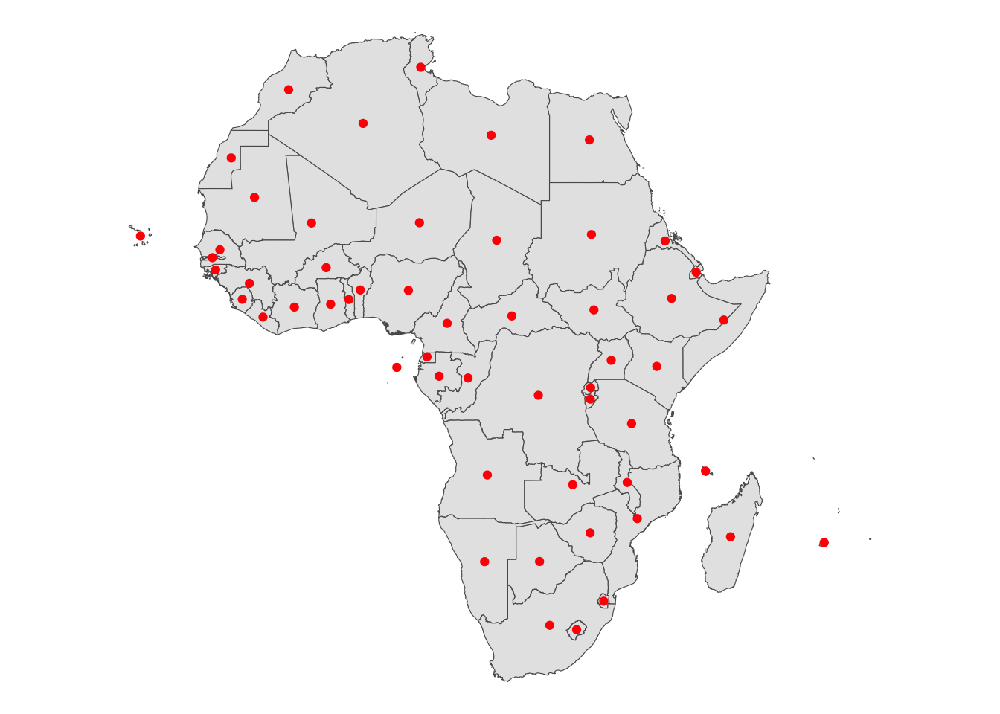
Now, for the centroid of each country, we find its closest point on the coast line using sf::st_nrearest_points(). sf::st_nearest_points(x, y) loops through each geometry in x and returns the closest point in each feature of y. So, we first union the coast lines so we only get the single closest point on the coast.
(
coast_union <- sf::st_union(coast)
)Geometry set for 1 feature
Geometry type: MULTILINESTRING
Dimension: XY
Bounding box: xmin: -20037510 ymin: -20261860 xmax: 20037510 ymax: 18428920
Projected CRS: WGS 84 / Pseudo-MercatorNotice that coast_union is now has a single feature while coast has 4177 lines. Now, we are ready to use st_nearest_points.
minum_dist_to_coast <- sf::st_nearest_points(countries_centroid, coast_union)As you can see below, this returns a line between the centroid and the coast.
(
g_min_dist_line <-
ggplot() +
geom_sf(data = countries_simp) +
geom_sf(data = minum_dist_to_coast, color = "red") +
theme_void()
)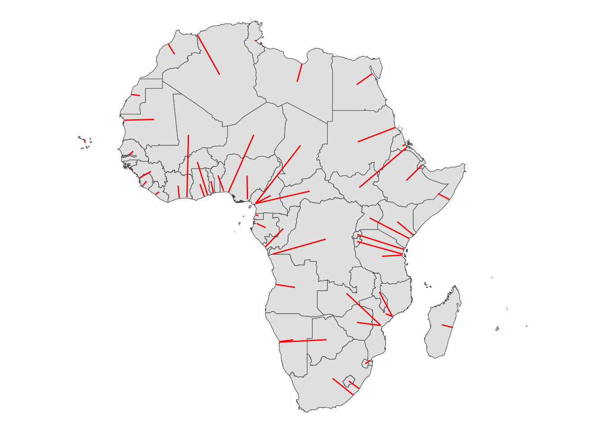
However, what we need is the end point of the lines. We can use lwgeom::st_endpoint() to extract such a point20.
20 The lwgeom package is a companion to the sf package. Its package website is here
closest_pt_on_coast <- lwgeom::st_endpoint(minum_dist_to_coast)The end points are represented as blue points in the figure below.
g_min_dist_line +
geom_sf(
data = closest_pt_on_coast,
color = "blue",
size = 2
) +
theme_void()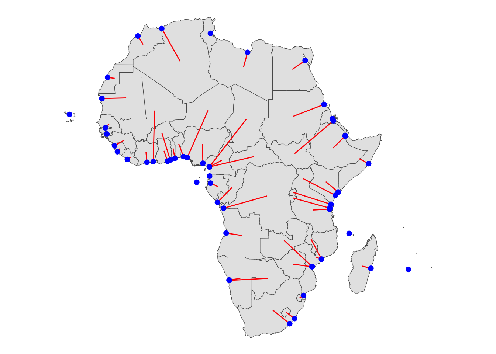
Let’s make closest_pt_on_coast as part of countries_simp by assigning it to a new column named nearest_pt.
countries_simp$nearest_pt <- closest_pt_on_coastLet’s now calculate the distance between the closest point on the coast to the nearest slave trade center. Before doing so, we first need to convert trade_centers to an sf object. At the moment, it is merely a data.frame and cannot be used for spatial operations like calculating distance. Since the lon, lat are in epsg:4326, we first create an sf using the GRS and then reproejct it to epsg:3857, so it has the same CRS as the other sf objects.
(
trade_centers_sf <-
trade_centers %>%
st_as_sf(coords = c("lon", "lat"), crs = 4326) %>%
st_transform(crs = 3857)
)Simple feature collection with 9 features and 2 fields
Geometry type: POINT
Dimension: XY
Bounding box: xmin: -9168273 ymin: -2617513 xmax: -4288027 ymax: 4418219
Projected CRS: WGS 84 / Pseudo-Mercator
# A tibble: 9 × 3
name fallingrain_name geometry
* <chr> <chr> <POINT [m]>
1 Virginia Virginia Beach (-8458055 4418219)
2 Havana Habana (-9168273 2647748)
3 Haiti Port au Prince (-8051739 2100853)
4 Kingston Kingston (-8549337 2037549)
5 Dominica Roseau (-6835017 1723798)
6 Martinique Fort-de-France (-6799394 1644295)
7 Guyana Georgetown (-6473228 758755.9)
8 Salvador Salvador da Bahia (-4288027 -1457447)
9 Rio de Janeiro Rio (-4817908 -2617513)ggplot() +
geom_sf(data = trade_centers_sf, color = "red") +
geom_sf(data = countries_simp, aes(geometry = geometry)) +
theme_void()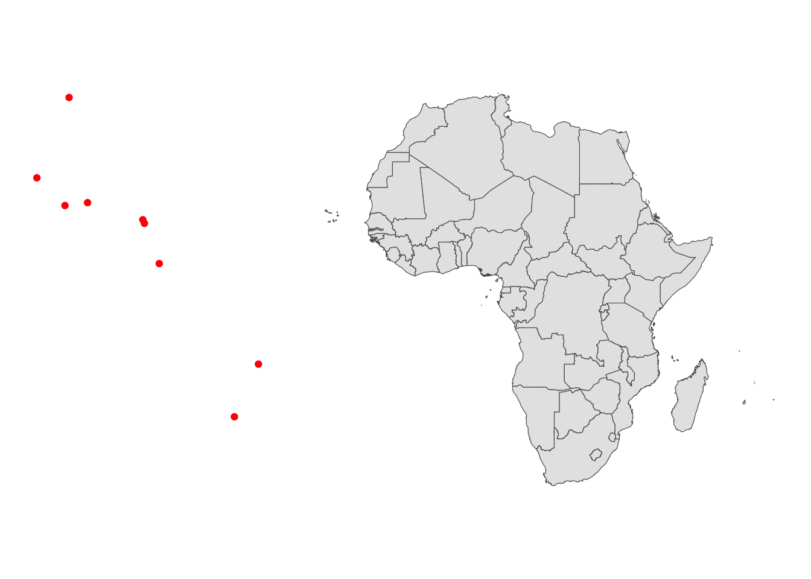
In this demonstration, we calculate distance “as the bird flies” rather than “as the boat travels” using sf::st_distance(). 21. sf::st_distance(x, y) returns the distance between each of the elements in x and y in a matrix form.
21 This is not ideal, but calculating maritime routes has yet to be implemented in the sf framework. If you are interested in calculating maritime routes, you can follow https://www.r-bloggers.com/computing-maritime-routes-in-r/. This requires the sp package
trade_dist <- sf::st_distance(countries_simp$nearest_pt, trade_centers_sf)
head(trade_dist)Units: [m]
[,1] [,2] [,3] [,4] [,5] [,6] [,7] [,8]
[1,] 11524640 11416031 10179765 10629529 8907267 8846828 8274449 5824949
[2,] 13748687 13887733 12676043 13149129 11406957 11355782 10886895 8647735
[3,] 9581167 9745043 8548826 9031060 7289700 7244017 6860791 5164743
[4,] 9292324 9417143 8215166 8694951 6952594 6905440 6507429 4805015
[5,] 12274855 11991450 10748178 11171531 9490901 9423172 8757351 6013466
[6,] 10332371 10485152 9283995 9763730 8021308 7973939 7565252 5706017
[,9]
[1,] 6484009
[2,] 9349100
[3,] 6192456
[4,] 5845456
[5,] 6435144
[6,] 6658041We can get the minimum distance as follows,
(
min_trade_dist <- apply(trade_dist, 1, min)
) [1] 5824949 8647735 5164743 4805015 6013466 5706017 4221530 5705994
[9] 5811638 5671835 9131093 3696804 9435913 6967219 9273570 9254110
[17] 5063714 9432182 5602645 4726523 3760754 3930290 3833379 5631878
[25] 8922914 3810618 8119209 7962929 6404745 9748744 4377720 8406030
[33] 4503451 10754102 8407292 6009943 5246859 5574562 8689308 9188164
[41] 3940639 3718730 9859817 9263852 5252289 8052799 5705994 4938291
[49] 7715612 8640368 8835414 7876588 8170477 8168325Let’s assign these values to a new column named distance_to_trade_center in countries_simp while converting the unit to kilometer from meter.
countries_simp$distance_to_trade_center <- min_trade_dist / 1000Figure below color-differentiate countries by their distance to the closest trade center.
ggplot() +
geom_sf(data = trade_centers_sf, color = "red") +
geom_sf(
data = countries_simp,
aes(geometry = geometry, fill = distance_to_trade_center)
) +
scale_fill_viridis_c(name = "Distance to trade center") +
theme_void() +
theme(legend.position = "bottom")
1.6.2.2 Calculate slaves exported from each country in Africa
Nunn (2008) used data on the number slaves exported from each ethnic region in ethnic_regions. Note that many ethnic regions intersects more than one countries as can be seen below, where the red and black lines represent country and ethnic region borders, respectively.
ggplot() +
geom_sf(
data = countries_simp,
aes(geometry = geometry),
color = "red"
) +
geom_sf(
data = ethnic_regions,
aes(geometry = geometry),
color = "grey60",
fill = NA
) +
theme_void()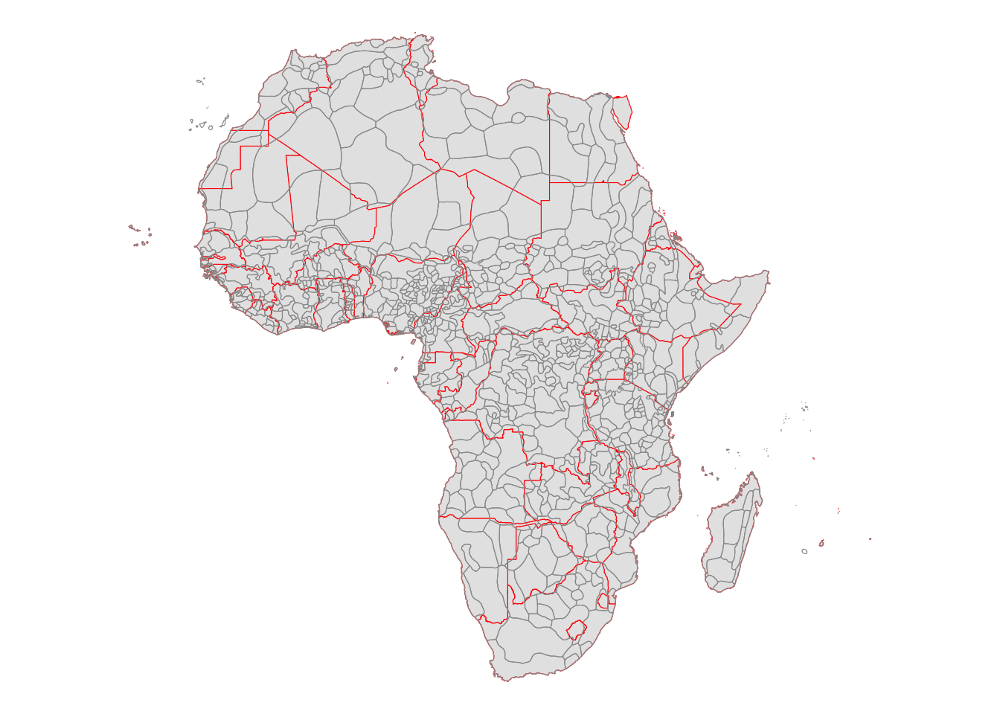
So, we need to assign a mapping from the amount of slaves exported from tribal regions to countries. We achieve this by means of “area weighted interpolation.” For example, if a country has 40% of a tribal region, then it will be assigned 40% of the slaves exported. The main assumption is that the distribution of slaves traded in a region is uniform.
Unfortunately, ethnic region data is not available on Prof. Nunn’s website. So, we generate fake data in this demonstration. Mean is increasing as we move west and normalized by area of region
ggplot() +
geom_sf(
data = ethnic_regions,
aes(fill = slaves_traded)
) +
scale_fill_viridis_c(name = "# of slaves traded") +
theme_void() +
theme(
legend.position = "bottom"
)
Let’s implement area-weighted interpolation on this fake dataset using sf::st_interpolate_aw(). Since we would like to sum the number of exported slaves from each ethnic region, we use extensive = TRUE option.22
22 extensive= FALSE does a weighted mean. More information is available here
countries_simp$slaves_traded <-
sf::st_interpolate_aw(
st_make_valid(ethnic_regions[, "slaves_traded"]),
st_make_valid(countries_simp),
extensive = TRUE
) %>%
sf::st_drop_geometry() %>%
dplyr::pull(slaves_traded)The left and right panel of the figure below shows the number of exported slaves by ethnic region and by country, respectively.
ethnic_regions_plot <-
ggplot(ethnic_regions) +
geom_sf(aes(geometry = geometry, fill = slaves_traded), color = NA) +
scale_fill_viridis_c(name = "# of slaves traded") +
theme_void() +
theme(legend.position = "bottom")
countries_plot <-
ggplot(countries_simp) +
geom_sf(aes(geometry = geometry, fill = slaves_traded), color = NA) +
scale_fill_viridis_c(name = "# of slaves traded") +
theme_void() +
theme(legend.position = "bottom")
ethnic_regions_plot | countries_plot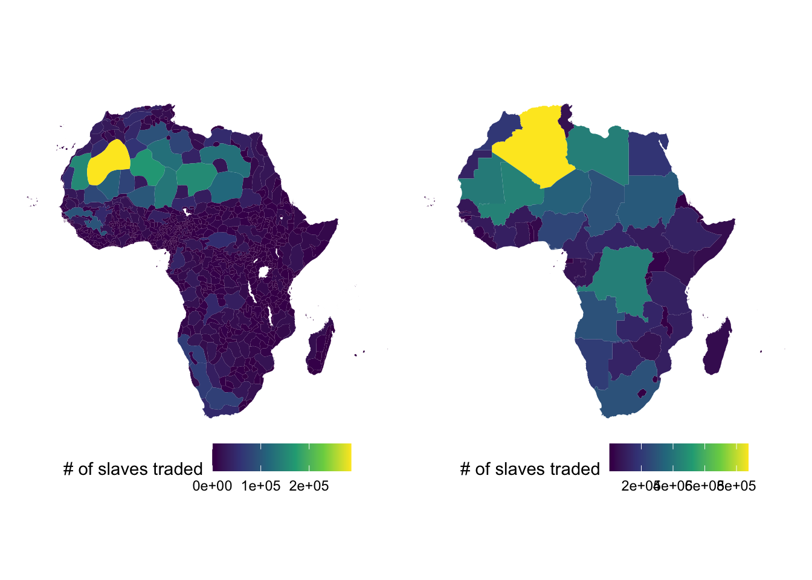
1.7 Terrain Ruggedness and Economic Development in Africa: Nunn 2012
1.7.1 Project Overview
Objective:
Nunn and Puga (2012) showed empirically that the ruggedness of the terrain has had a positive impacts on economic developement in African countries. In this demonstration, we calculate Terrain Ruggedness Index (TRI) for African countries from the world elevation data.
Datasets
- World elevation data
- World country borders
GIS tasks
- read a raster file
- use
terra::rast()
- use
- import world country border data
- crop a raster data to a particular region
- use
terra::crop()
- use
- replace cell values
- use
terra::subst()
- use
- calculate TRI
- use
terra::focal()
- use
- create maps
- use the
tmappackage
- use the
Preparation for replication
Run the following code to install or load (if already installed) the pacman package, and then install or load (if already installed) the listed package inside the pacman::p_load() function.
if (!require("pacman")) install.packages("pacman")
pacman::p_load(
sf, # vector data operations
tidyverse, # data wrangling
stars,
tmap,
raster,
rnaturalearth,
skimr
)1.7.2 Project Demonstration
We first read the world elevation data using terra::rast().
(
dem <- terra::rast("Data/nunn_2012/GDEM-10km-BW.tif")
)class : SpatRaster
dimensions : 2160, 4320, 1 (nrow, ncol, nlyr)
resolution : 0.08333333, 0.08333333 (x, y)
extent : -180.0042, 179.9958, -89.99583, 90.00417 (xmin, xmax, ymin, ymax)
coord. ref. : lon/lat WGS 84 (EPSG:4326)
source : GDEM-10km-BW.tif
name : GDEM-10km-BW tm_shape(dem) +
tm_raster()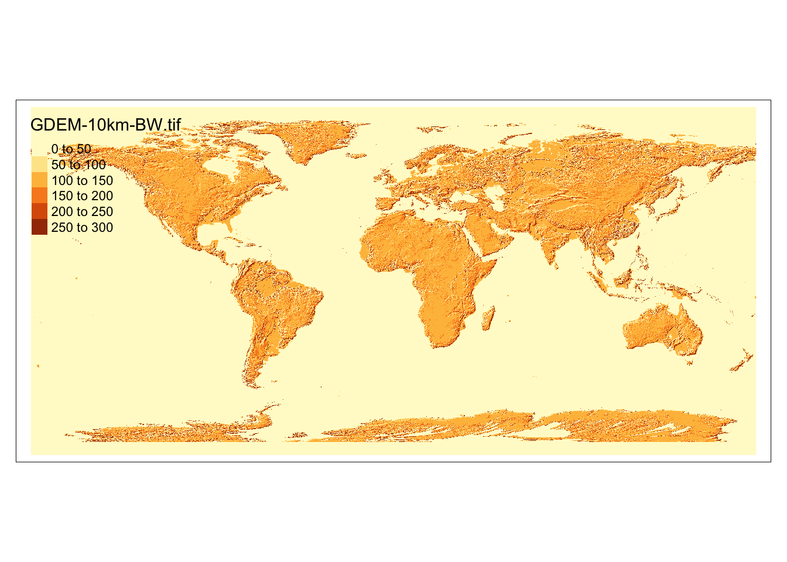
In this dataset, the elevation of the ocean floor is recorded as 0, so let’s replace an elevation of 0 with NAs. This avoids a problem associated with calculating TRI later.
dem <- terra::subst(dem, 0, NA)tm_shape(dem) +
tm_raster()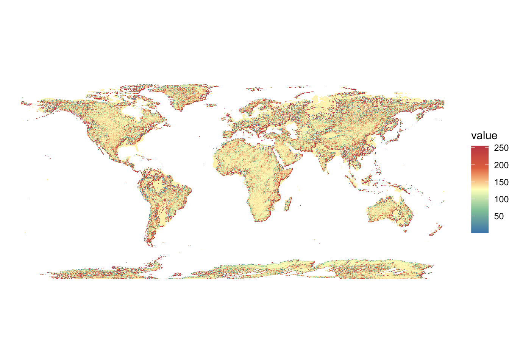
Now, since our interest is in Africa, let’s just crop the raster data to its African portion. To do so, we first get the world map using rnaturalearth::ne_countries() and filter out the non-African countries.
africa_sf <-
#--- get an sf of all the countries in the world ---#
rnaturalearth::ne_countries(scale = "medium", returnclass = "sf") %>%
#--- filter our non-African countries ---#
filter(continent == "Africa")We can now apply terra::crop() to dem based on the bounding box of africa_sf.
africa_dem <- terra::crop(dem, africa_sf)Here is a map of the crop data.
tm_shape(africa_dem) +
tm_raster()
Now, we are ready to calculte TRI, which is defined as
\[ Ruggedness_{r,c} = \sqrt{\sum_{i=r-1}^{r+1} \sum_{j= r-1}^{r+1} (e_{i,j} - e_{r,c})^2} \]
We are going to loop through the raster cells and calculate TRI. To do so, we make use of terra::focal() It allows you to apply a function to every cell of a raster and bring a matrix of the surrounding values as an input to the function. For example terra::focal(raster, w = 3, fun = any_function) will pass to your any_function a 3 by 3 matrix of the raster values centered at the point.
Let’s define a function that calculates TRI for a given matrix.
Now, let’s calculate TRI.
tri_africa <-
terra::focal(
africa_dem,
w = 3,
fun = calc_tri
)Here is the map of the calculated TRI.
tm_shape(tri_africa) +
tm_raster()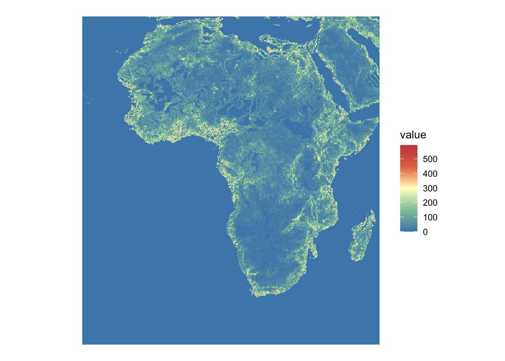
1.8 TseTse fly suitability index: Alsan 2015
1.8.1 Project Overview
Objective:
Create TseTse fly suitability index used in Alsan (2015) (find the paper here) from temperature and humidity raster datasets.
Datasets
- daily temperature and humidity datasets
GIS tasks
- read raster data files in the NetCDF format
- aggregate raster data
- read vector data in the geojson format
- use
stars::st_read()
- use
- shift (rotate) longitude of a raster dataset
- use
terra::rotate()
- use
- convert
starsobjects toSpatRasterobjects, and vice versa- use
as(, "SpatRaster") - use
stars::st_as_stars()
- use
- define variables inside a
starsobject- use
mutate()
- use
- subset (crop) raster data to a region specified by a vector dataset
- use
[]
- use
- spatially aggregate raster data by regions specified by a vector dataset
- create maps
- use the
ggplot2package
- use the
Preparation for replication
Run the following code to install or load (if already installed) the pacman package, and then install or load (if already installed) the listed package inside the pacman::p_load() function.
if (!require("pacman")) install.packages("pacman")
pacman::p_load(
sf, # vector data operations
tidyverse, # data wrangling
stars,
exactextractr
)1.8.2 Project Demonstration
Marcella Alsan’s 2015 AER paper “The Effect of the TseTse Fly on African Development” tests a hypothesis about historical African economic development. The hypothesis considers the TseTse fly – a fly indigenous to Africa that is lethal to crops. The theory posits that the fly prevented agricultural surplus and hence stunted historical economic development in impacted regions of Africa. To test the hypothesis, Alsan (2015) whats to compare African tribes that were in regions highly affected by the TseTse fly to areas not highly affected. To do so, they use a “sutability index” that is based on an areas average temperature and humidity.
For this replication, we will recreate the suitability index and aggregate the data at the tribe level. For reference, the original figure from the article is reproduced in Figure 1.17.

1.8.2.1 Scientific Details
Understanding the details of the suitablity index is not necessary, but below I implement the following to derive the index. Feel free to skip this if you would like.
Let B represent the birth rate, which is temperature dependent, and M represent the mortality of adult flies from desication. The growth rate, \(\lambda\) is defined as: \[ \lambda= \max(B - M, 0) \]
The formula for the birth rate and the mortality rate are determined by scientific experiments and have the following form \[ B(t) = (-0.0058 * t^2 + .2847 t -2.467) \] \[ M(t, h) = -0.0003 * satdef^2 + 0.0236 * satdef + .235, \] where \(t\) is temperature, \(h\) is humidity and \(satdef\) is defined as:
\[ satdef = \frac{100-h}{100} \left( 6.1078 * exp(\frac{17.2694t}{t+237}) \right) \]
A “second form of mortality that is not due to climate, but rather attributable to competition among flies, is introduce. This is known as density dependent mortality, \(\Delta\); and can be expressed as:” \[ \Delta = \phi (N)^\psi \]
This yields a steady state equilibrium population of \[ N^* = (\frac{\lambda}{\phi})^{1/\psi} \] which is calibrated with = 0.025 = 1.25.
Lastly, the TseTse Suitability Index is the Z-score of \(N^*\).
1.8.2.2 Load and Prepare Data
To generate the data, we first download historical weather data in 1871 from NOAA-CIRES 20th Century Reanalysis. This data comes in a NetCDF file format (with extension .nc). We can use stars::read_ncdf() read a NetCDF file.
# NOAA-CIRES 20th Century Reanalysis version 2
#--- temperature ---#
(
temp_raw <- stars::read_ncdf("data/alsan_2015/air.sig995.1871.nc")
)stars object with 3 dimensions and 1 attribute
attribute(s), summary of first 1e+05 cells:
Min. 1st Qu. Median Mean 3rd Qu. Max.
air [K] 235.13 260.45 278.93 277.0255 294.93 308.33
dimension(s):
from to offset delta refsys x/y
lon 1 180 -1 2 WGS 84 [x]
lat 1 91 91 -2 WGS 84 [y]
time 1 365 1871-01-01 UTC 1 days POSIXct #--- humidity ---#
(
humidity_raw <- stars::read_ncdf("data/alsan_2015/rhum.sig995.1871.nc")
)stars object with 3 dimensions and 1 attribute
attribute(s), summary of first 1e+05 cells:
Min. 1st Qu. Median Mean 3rd Qu. Max.
rhum [%] 11 74 78 77.37066 84 100
dimension(s):
from to offset delta refsys x/y
lon 1 180 -1 2 WGS 84 [x]
lat 1 91 91 -2 WGS 84 [y]
time 1 1460 1871-01-01 UTC 6 hours POSIXct Since these raster files contain daily observations (see the time dimension above), Alsan aggregates them to the annual level. To average across a dimension (e.g. time), we will use the function stars::st_apply.
# Aggregate to annual average
temp <-
stars::st_apply(
X = temp_raw, MARGIN = c("lon", "lat"), FUN = mean
) %>%
# Rename "mean" attribute which was created from st_apply
# Convert Kelvin to Celsius
mutate(temp = mean - 273.15) %>%
dplyr::select(temp)
humidity <-
stars::st_apply(
X = humidity_raw, MARGIN = c("lon", "lat"), FUN = mean
) %>%
# Rename "mean" attribute which was created from st_apply
mutate(hum = mean) %>%
dplyr::select(hum)We then combine the two to a single weather dataset.
(
weather <- c(temp, humidity)
)stars object with 2 dimensions and 2 attributes
attribute(s):
Min. 1st Qu. Median Mean 3rd Qu. Max.
temp -47.37911 -4.803978 8.705419 5.683404 22.29556 30.72751
hum 18.93425 73.694521 75.642466 74.541109 80.79110 96.53836
dimension(s):
from to offset delta refsys x/y
lon 1 180 -1 2 WGS 84 [x]
lat 1 91 91 -2 WGS 84 [y]The second piece of data needed is a shape file containing the Tribal boundaries. The original drawings come from Murdock (1959), but were digitized by Nathan Nunn and coauthors and is available here.
# African Tribes, originally from Murdock (1959)
tribes <-
sf::st_read("Data/alsan_2015/Murdock_shapefile/borders_tribes.geojson") %>%
#--- reproject to the CRS of temp_raw ---#
sf::st_transform(st_crs(temp_raw))Reading layer `borders_tribes' from data source
`/Users/tmieno2/Dropbox/TeachingUNL/R-as-GIS-for-Scientists/chapters/Data/alsan_2015/Murdock_shapefile/borders_tribes.geojson'
using driver `GeoJSON'
Simple feature collection with 812 features and 4 fields
Geometry type: MULTIPOLYGON
Dimension: XY
Bounding box: xmin: -17.22583 ymin: -34.76862 xmax: 51.27722 ymax: 37.33028
Geodetic CRS: WGS 84# Africa
africa <-
sf::st_read("Data/alsan_2015/africa.geojson") %>%
#--- reproject to the CRS of temp_raw ---#
st_transform(st_crs(temp_raw))Reading layer `africa' from data source
`/Users/tmieno2/Dropbox/TeachingUNL/R-as-GIS-for-Scientists/chapters/Data/alsan_2015/africa.geojson'
using driver `GeoJSON'
Simple feature collection with 1 feature and 3 fields
Geometry type: MULTIPOLYGON
Dimension: XY
Bounding box: xmin: -17.12917 ymin: -34.77313 xmax: 51.27278 ymax: 37.33521
Geodetic CRS: WGS 84Here is the map of triabl boundaries superimposed on top of Africa.
ggplot() +
geom_sf(data = tribes) +
geom_sf(data = africa, color = "#F26D21", fill = NA) +
coord_sf() +
theme_map()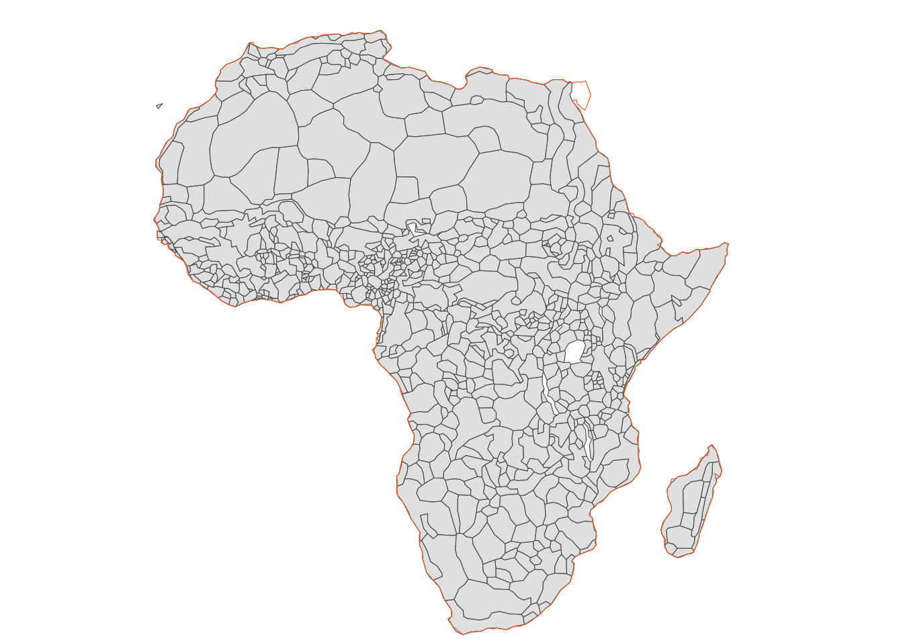
There is a common problem in working with raster data for countries that cross the Prime Meridian. To see the problem, let’s plot our weather data:
ggplot() +
geom_stars(data = weather, mapping = aes(x = lon, y = lat, fill = temp)) +
geom_sf(data = africa, color = "#F26D21", fill = NA) +
coord_sf() +
scale_fill_distiller(type = "seq", palette = "Greys", direction = 1, na.value = NA) +
theme_map()
As you can see, the portion of Africa east of the Prime Meridian is wrapped to the other side of the map. That is because there are two ways to handle longitude: either from [0,360] or [-180,180]. Since our data is in [0,360] form, Africa will be cut in half. To convert, we can use the terra::rotate() function in the terra package. This means that you first need to convert weather, which is a stars, to a SpatRaster object, and then apply terra::rotate() to it.
(
weather_raster <-
#--- convert to SpatRaster ---#
as(weather, "SpatRaster") %>%
terra::rotate()
)class : SpatRaster
dimensions : 91, 180, 2 (nrow, ncol, nlyr)
resolution : 2, 2 (x, y)
extent : -181, 179, -91, 91 (xmin, xmax, ymin, ymax)
coord. ref. : lon/lat WGS 84
source(s) : memory
names : temp, hum
min values : -47.37911, 18.93425
max values : 30.72751, 96.53836 Conversion back to a stars object with multiple layers needs some work. Specfically, we turn each layer into a stars object and then combine them using c().
weather <-
c(
st_as_stars(weather_raster$temp),
st_as_stars(weather_raster$hum)
)Things are looking good now.
ggplot() +
geom_stars(data = weather, mapping = aes(x = x, y = y, fill = temp)) +
geom_sf(data = africa, color = "#F26D21", fill = NA) +
coord_sf() +
scale_fill_distiller(
type = "seq", palette = "Greys", direction = 1, na.value = NA
) +
theme_map()
Calculate TseTse Suitability Index
Following the scientific formulae above, we add those variables to the stars object using mutate() function as if you are wrangling a data.frame.
weather <-
weather %>%
mutate(
B = -0.0058 * temp^2 + .2847 * temp - 2.467,
satdef = (6.1078 * exp((17.2694 * temp) / (temp + 237))) - (hum / 100) * (6.1078 * exp((17.2694 * temp) / (temp + 237))),
M = -0.0003 * satdef^2 + 0.0236 * satdef + .235,
lambda = B - M,
lambda = ifelse(lambda < 0, 0, lambda),
Nstar = (lambda / 0.025)^(1 / 1.25),
)Let’s subset weather to Africa and then calculate tsetse.
Here is the map of TseTse suitability index.
ggplot() +
geom_stars(
data = weather_africa,
mapping = aes(x = x, y = y, fill = tsetse)
) +
coord_sf() +
scale_fill_distiller(
type = "seq", palette = "Greys", direction = -1, na.value = NA
) +
theme_map()
Now that we have our raster of the standardized TseTse suitability index, we want to aggregate this to the tribal level. This can be done using aggregate().
agg_tsetse <-
aggregate(
x = weather_africa["tsetse"],
by = tribes,
FUN = mean,
na.rm = TRUE,
as_points = FALSE
)However, we are going to run into a problem due to the size of the tribes relative to the size of the raster cells.
plot(agg_tsetse)
Notice all the holes in the map that we have!23. This problem can be fixed using the exactextractr package. Since it does not work with stars object, we need to convert weather to a SpatRaster objective from the terra package (you can alternatively convert to a raster object).
23 This problem is documented well in this thread
tribes$tsetse <-
exactextractr::exact_extract(
x = as(weather["Nstar"], "SpatRaster"),
# x = as(weather["Nstar"], "Raster"),
y = tribes,
fun = "mean",
progress = FALSE # not display progress bar
)ggplot() +
geom_sf(data = tribes, aes(fill = tsetse)) +
coord_sf() +
scale_fill_distiller(
type = "seq",
palette = "Greys",
direction = 1,
na.value = "red"
)
There we have it! We successfully dealt with a slew of issues but now have created the tsetse susceptability index at the tribal level!
Alsan, Marcella. 2015. “The Effect of the Tsetse Fly on African Development.” American Economic Review 105 (1): 382–410.
Nunn, Nathan. 2008. “The Long-Term Effects of Africa’s Slave Trades.” The Quarterly Journal of Economics 123 (1): 139–76.
Nunn, Nathan, and Diego Puga. 2012. “Ruggedness: The Blessing of Bad Geography in Africa.” Review of Economics and Statistics 94 (1): 20–36.